DESeq2 and PCA Analysis
For manuscript: Neurogenomic landscape of male cooperative behavior in a wild bird
Last Substantive change January 2022
Last Knit “2022-05-26”
Our primary aim is to explore whether among-individual variation in T modulated cooperative behaviour is associated with differences in gene expression. We have 5 main traits that were measured.
- Status: Territorial or Floater
- Testosterone concentration
- mean_T is best estimate of among individual variation in T across all birds (’r summary(behav$mean_T)`). This measure is repeatable (Ryder et al 2020) within individuals and could be considered a hormonal phenotype.
- Strength
- Mean number of social interactions per 10 hr day as detected by telemetry.
Here, I take the filtered dataset from the QC process, and run a whole brain analysis, as well as individual tissue analysis. I also explore the relationships between our explanatory variables.
key<- read.csv("../data_filtered/data_key_Parsed_ReplicatesRemoved.csv")
behav<- read.csv("../data_unfiltered/PIPFIL_T_and_behav_data.csv")
rownames(key)<- key$X
key$Color_ID<- sub("/","", key$Color_ID)
key<- plyr::rename(key, replace=c("Color_ID"="colorID"))
behav$status<- plyr::revalue(behav$status, c("floa"="floater", "terr"="territorial"))
key_behav<- merge(key, behav, by="colorID")
key_behav<- key_behav[!is.na(key_behav$last_behav),]
#create a data.frame with all of the observations.
not_in_behav<- key[!key$X %in% key_behav$X,]
cols_not_key<- colnames(key_behav)[!colnames(key_behav) %in% colnames(key)]
cols_not_key_df<- data.frame(matrix(NA, nrow = nrow(not_in_behav), ncol = length(cols_not_key)))
colnames(cols_not_key_df)<- cols_not_key
not_in_behav<- cbind(not_in_behav, cols_not_key_df)
key_behav<- rbind(key_behav, not_in_behav)
rownames(key_behav)<- key_behav$X
key_behav$Tissue<- factor(key_behav$Tissue, levels=c("GON","PIT","VMH","AH","PVN","POM","ICO","GCT","AI","TNA","LS", "BSTm"))
key_behav<- key_behav[order(rownames(key_behav)),]
key_behav$Class<- as.factor(key_behav$Class)
key_behav$Class<- revalue(key_behav$Class, replace=c("SCB floater"="Predefinitive floater", "DCB floater "="Definitive floater", "DCB territorial"="Territorial"))
key_behav$Class<- factor(key_behav$Class, levels=c("Predefinitive floater", "Definitive floater", "Territorial"))
rownames(key_behav)<- key_behav$sampleID
key_behav<- key_behav[order(key_behav$sampleID),]
key_behav$Year<- as.factor(key_behav$Year)
key_behav$Batch<- as.factor(key_behav$Batch)
key_behav$Status<- as.factor(key_behav$Status)
key_behav_unique<- key_behav[!duplicated(key_behav$colorID),]
#what individuals are missing?
#key$in_behav<- key$Harvest_ID %in% behav$Harvest_ID
#key[key$in_behav==FALSE, c("colorID", "Harvest_ID")]
#only unbanded individuals are missing from the larger behavioural dataset.
#check that status matches between datasets
#key_behav$status_match<- ifelse(key_behav$status==key_behav$Status, "same","not")
#nrow(key_behav[key_behav$status_match=="not",]) #0 GOOD!
#read the raw count data
data<- read.csv("../data_filtered/data_RawCounts_all_ReplicatesRemoved_antisense_V2.csv")
rownames(data)<- data$X
data$X<- NULL
### Gene Ontology
go_key<- read.csv("../GO_annotations/Maggies_annotations_modifiedR.csv")
go_key<- plyr::rename(go_key, replace=c("GeneID"="gene"))
go_terms<- read.csv("../GO_annotations/pfil_GO_key_raw.csv")
go_terms<- plyr::rename(go_terms, replace=c("GeneID"="gene"))
go2gene_bp<- go_terms[which(go_terms$Aspect=="P"),c("GO_ID", "gene")]
go2gene_mf<- go_terms[which(go_terms$Aspect=="F"),c("GO_ID", "gene")]
go_obo<- read.csv("../GO_annotations/ontology_obo_out.csv")
go_obo<- plyr::rename(go_obo, replace=c("id"="GO_ID"))
go2name_bp<- go_obo[which(go_obo$namespace=="biological_process"),c("GO_ID", "name")]
go2name_mf<- go_obo[which(go_obo$namespace=="molecular_function"),c("GO_ID", "name")]1 Exploration of the behavioural data
We were concerned about the signal from the last few days outweighing the gene-expression signal from their overall phenotype, so we will explore how different these measures are from eachother.

1.1 Associations between variables
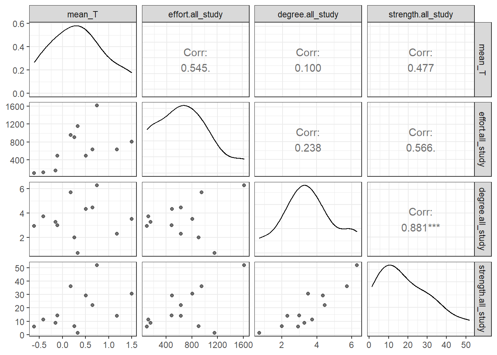
Given the significant relationship between degree and strength, I will only keep one of these variables - the strength. This was the most repeatable of the two sociality variables in Ryder et al. (2020).
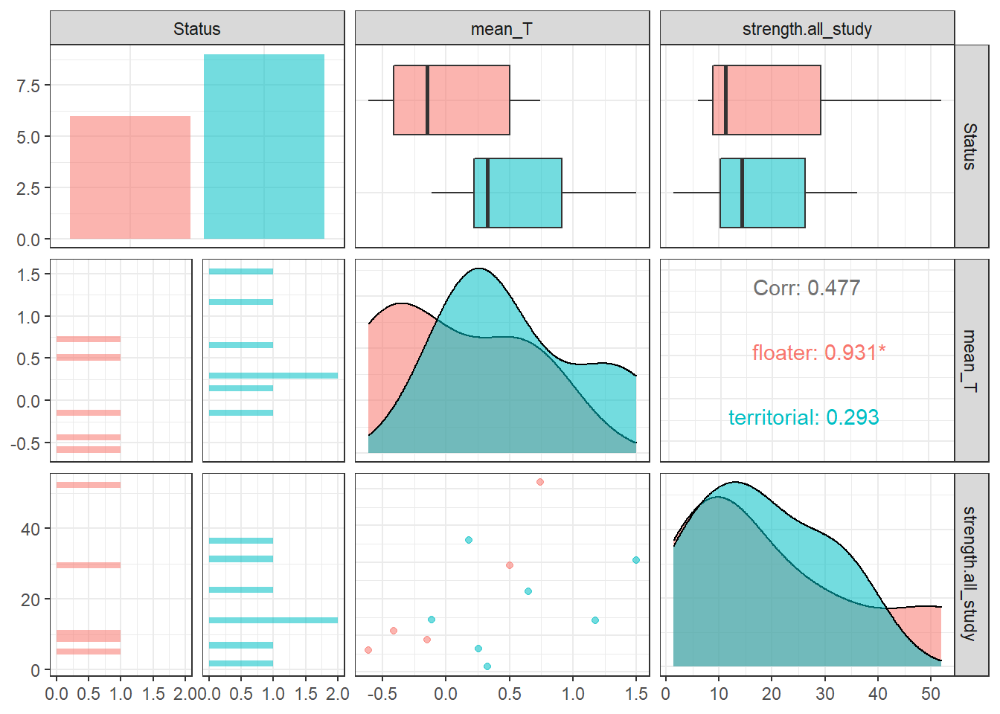

All significance tests cited in the figure above are based on just territorial and floater, but colour-coded according to plumage*status.

1.2 Nuisance variables
In the previous QC exploration I found substantial DEGs according to collection Year and Sequencing Batch. Here we explore how the continuous variables are distributed across sampling years. The tests find there is a difference in the medians between years for both our interest traits.

2 All tissues PCA
Plotting all the tissues
all_data<- data
start<- nrow(all_data)
#remove genes with avg read counts <20
all_data$avg_count<- apply(all_data, 1, mean)
all_data<- all_data[all_data$avg_count>20,]
all_data$avg_count<-NULL
#remove genes where >50% of samples have 0 gene expression
all_data$percent_0<- apply(all_data, 1, function(x)length(x[x==0]))
thresh<- ncol(all_data)/2
all_data<- all_data[all_data$percent_0<=thresh,]
all_data$percent_0<-NULL
#13652 genes.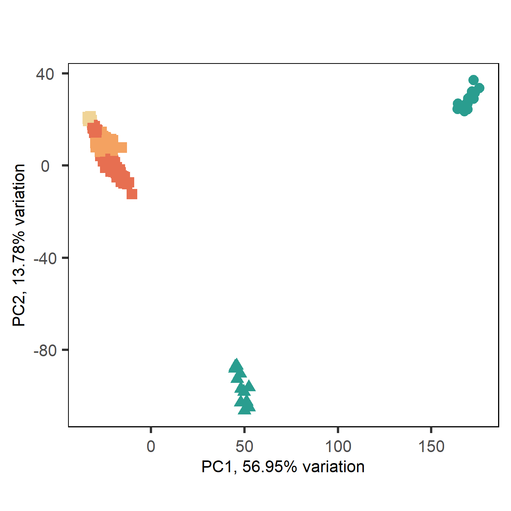
FALSE [1] "Batch"
FALSE [1] "Tissue"
FALSE [1] "Status"
FALSE [1] "Year"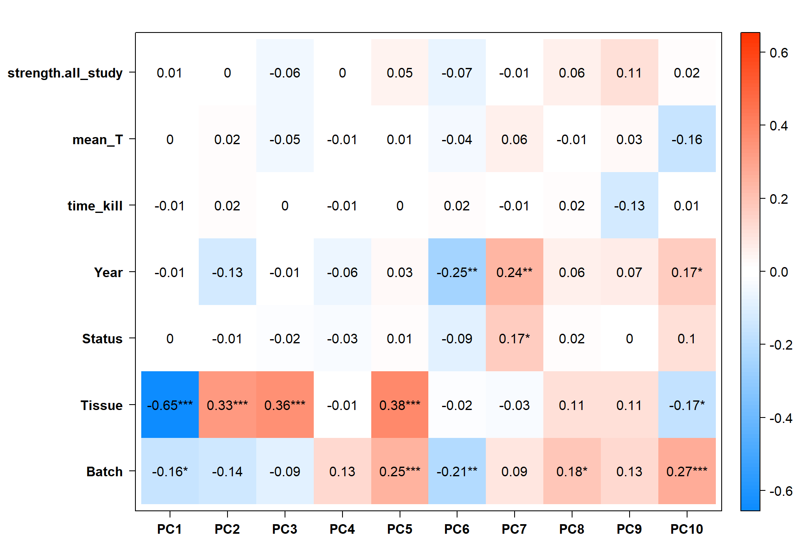
Based on these results it seems like PC7 is associated with social Status. Let’s explore this PC further.
library(nlme)
test<- data.frame(PC7=p$rotated$PC7)
test<- cbind(test, key_behav)
#summary(lm(PC5 ~ Year + Tissue*Status,data=test ))
m1<- lme(PC7 ~ Year + Tissue*Status, random=~1|Harvest_ID, data=test)
pc5test<- anova(m1)
#pc5test<- summary(aov(test$PC5 ~ test$Year + test$Status))
pc5test_anova <- ggtexttable(signif(pc5test,2))
#, theme = ttheme("mOrange"))
e<-biplot(p, x="PC1",y="PC7", lab=NULL, colby="Tissue", shape="Status", legendPosition="right", title="") + peri_theme
f<-ggplot(test, aes(x=Status, y=PC7)) + geom_boxplot() + geom_jitter()+ peri_theme + theme(legend.position="none")
ggarrange(e,ggarrange(pc5test_anova,f, nrow=2), ncol=2, nrow=1,labels=c(LETTERS[1:2]))
#ggsave(filename="figure_alltissues_PC7.pdf", device="pdf",height =4 ,width=8, units="in")
#ggsave(filename="figure_alltissues_PC7.png", device="png",height =4 ,width=8, units="in")Let’s see what genes are associated with each principal component. See GitHub repository for larger version.
loadings<- p$loadings
loadings$gene<- rownames(loadings)
loadings<- merge(loadings, go_key, by="gene")
plots<- list()
pcs<- paste0("PC",1:10)
for(i in pcs){
#i="PC2"
sub<- loadings[,c(i, "best_anno","gene")]
sub<- sub[order(sub[,i]),]
top30<- rbind(head(sub,15), tail(sub,15))
top30$best_anno2<- factor(top30$best_anno, levels=unique(top30$best_anno[order(top30[,i],top30$best_anno)]), ordered=TRUE)
top30$pos<- ifelse(top30[,i]<0, "neg", "pos")
plots[[i]]<-ggplot(top30, aes(x=best_anno2, y=top30[,i], fill=pos)) + geom_bar(stat="identity")+ peri_theme + coord_flip() + labs(x="gene", y=paste(i,"loading")) + scale_fill_manual(values=c("#0D8CFF","#FF3300")) + theme(legend.position="none")
}
ggarrange(plotlist=plots, ncol=5, nrow=2)
#ggsave(filename="figure_alltissue_loadings.pdf", device="pdf",height =8.5 ,width=16, units="in")
#ggsave(filename="figure_alltissue_loadings.png", device="png",height =8.5 ,width=16, units="in")3 Wholebrain PCA
outliers=c("PFT2_POM_run1")
brain_behav<- subset(key_behav, Tissue!="GON")
brain_behav<- subset(brain_behav, Tissue!="PIT")
brain_behav<- brain_behav[!rownames(brain_behav) %in% outliers,]
brain_behav<- droplevels(brain_behav)
brain_data<- data[,colnames(data) %in% rownames(brain_behav)]
start<- nrow(brain_data)
#remove genes with avg read counts <20
brain_data$avg_count<- apply(brain_data, 1, mean)
brain_data<- brain_data[brain_data$avg_count>20,]
brain_data$avg_count<-NULL
#remove genes where >50% of samples have 0 gene expression
brain_data$percent_0<- apply(brain_data, 1, function(x)length(x[x==0]))
thresh<- ncol(brain_data)/2
brain_data<- brain_data[brain_data$percent_0<=thresh,]
brain_data$percent_0<-NULL
#13652 genes.Looking for cohesive signatures across the whole brain. Overall, before this round of filtering for the brain dataset we have 16854 genes. After filtering we have 13653 genes. This final document is the result of lots of work in single tissues to determine outlier status that were identified in the QC process. We are excluding PFT2_POM_run1 because the analyses below indicated that it was an outlier within POM, other potentials identified in the QC process were not deemed outliers.
FALSE [1] "Batch"
FALSE [1] "Tissue"
FALSE [1] "Status"
FALSE [1] "Year"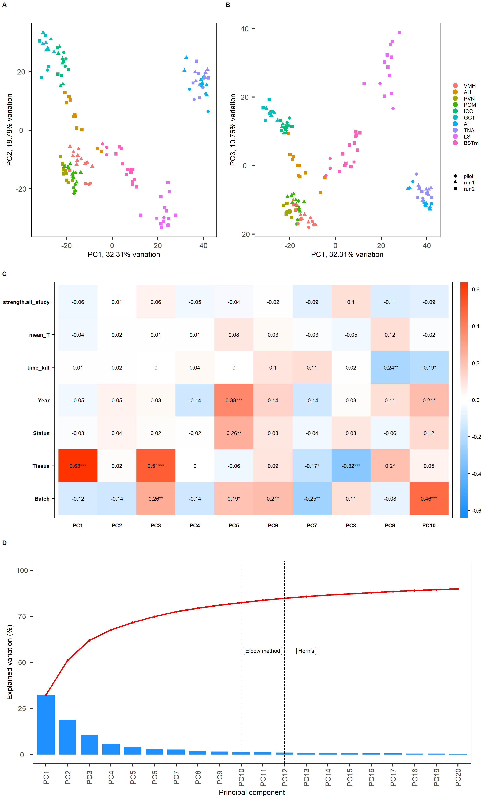
PC5 and PC10 seem to be associated with our interest variables.

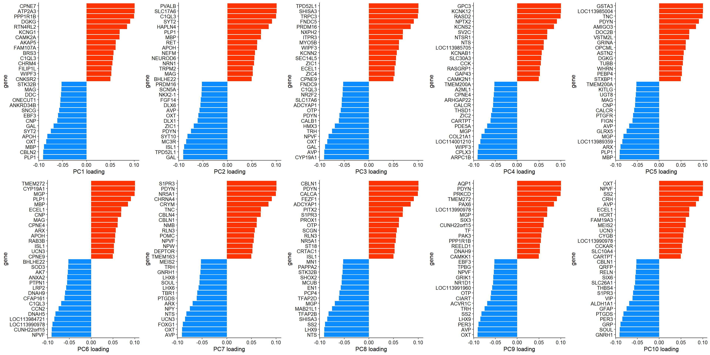
3.1 PC5 Gene Ontology
What are the gene ontology categories enriched in PC5?
res_go<- loadings[c("gene","PC5","best_anno")]
#res_go$logP<- -log(abs(res_go$PC5), 10)
#res_go$logP<- ifelse(res_go$PC5<0, -(res_go$logP), res_go$logP)
res_go<- res_go[order(res_go$PC5, decreasing=TRUE),]
geneList<- res_go$PC5
names(geneList)<- res_go$gene
y<- GSEA(geneList, TERM2GENE = go2gene_bp, TERM2NAME = go2name_bp)
ridgeplot(y) + scale_fill_viridis(direction=-1) + peri_theme
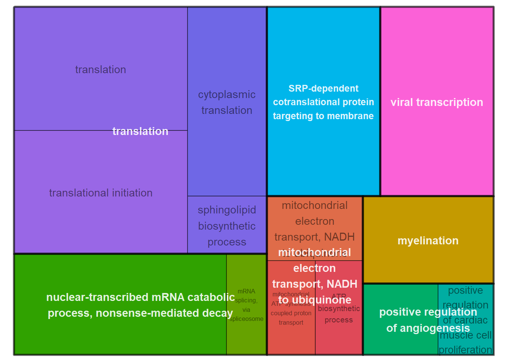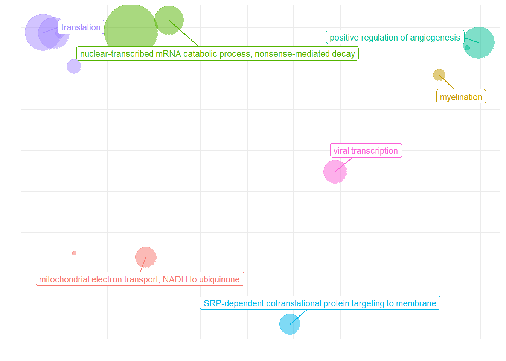
3.2 Batch Effects
What happens if I use batch effect exclusion on the whole brain? This way I wouldn’t have to use single tissue
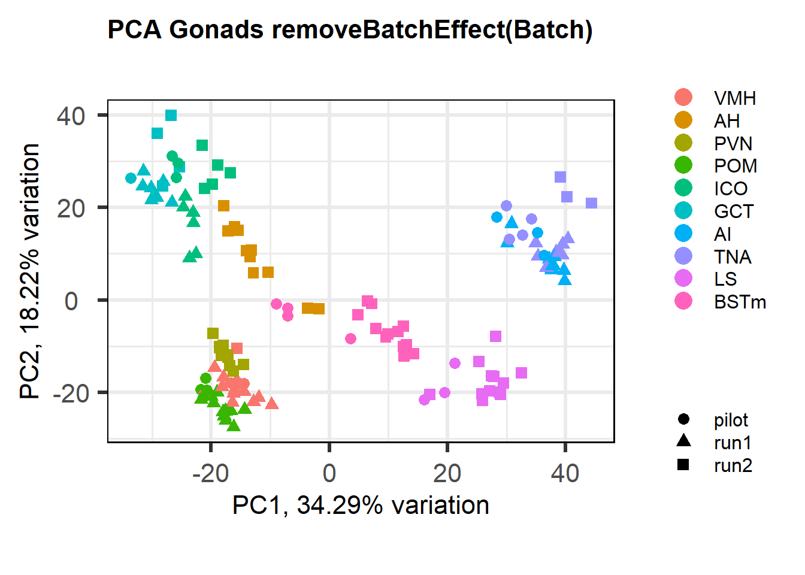
FALSE [1] "Batch"
FALSE [1] "Tissue"
FALSE [1] "Status"
FALSE [1] "Year"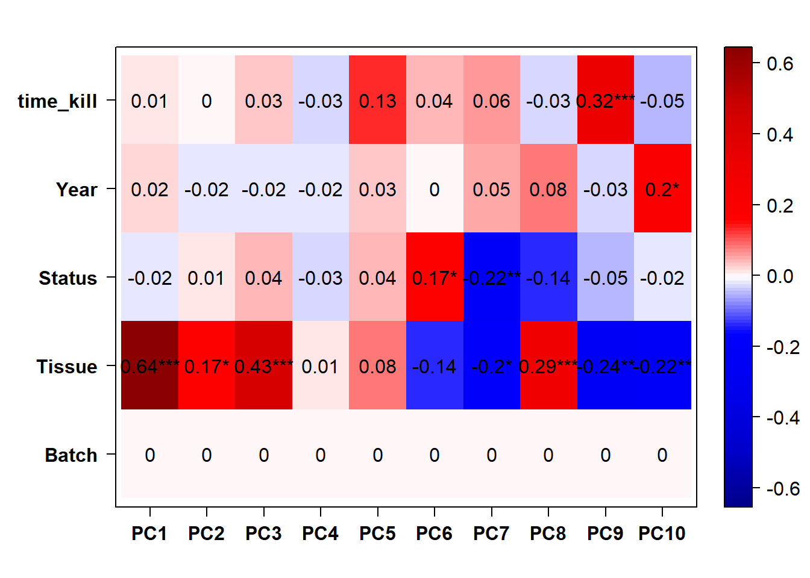
The PCA plot shows that this makes the differences between batches worse, even though the eigencorplot (correlation between PC axis and variable) doesn’t show it.
In previous whole brain analyses I have attempted to run full brain models in DESeq2 that accounts for individual. However, these analyses do not run because of unequal sample sizes among tissues (DESeq2 issue). Further, the PCA results suggests that accounting for batch effects is not helpful.
4 Gonads (GON)
I will use the first two tissues to demonstrate the processes applied across all tissues, but code echoing will be suppressed in future tissues.
gon_key<- subset(key_behav, Tissue=="GON")
gon_key<- droplevels(gon_key)
gon_data<- data[,colnames(data) %in% rownames(gon_key)]
start<- nrow(gon_data)
#remove genes with less than 5 reads
gon_data$avg_count<- apply(gon_data, 1, mean)
gon_data<- gon_data[gon_data$avg_count>5,]
gon_data$avg_count<-NULL
#remove genes where >50% of samples have 0 gene expression
gon_data$percent_0<- apply(gon_data, 1, function(x)length(x[x==0]))
thresh<- ncol(gon_data)/2
gon_data<- gon_data[gon_data$percent_0<=thresh,]
gon_data$percent_0<-NULLBefore filtering we had 16854 genes, after filtering for mean read count and excluding genes where >50% of samples had a count of 0 we are left with 16169
4.1 Checking the sampling
Before I go into the analyses, I am going to check that the sampling is equal across batches with respect to our variables of interest. With respect to Status we have gonad samples for 16, with respect to T and the tracking data we have 12 samples.
Here, we will run all the data to check for DEGs against status, then subset the data to only include those individuals with T and behavioural data.
fsb<- fisher.test(table(gon_key$Status, gon_key$Batch))
knitr::kable(table(gon_key$Status, gon_key$Batch), caption=paste0("Status across sequencing runs, fisher test p=", fsb$p.value)) %>% kable_styling()| pilot | run1 | |
|---|---|---|
| floater | 2 | 5 |
| territorial | 2 | 7 |
fsy<- fisher.test(table(gon_key$Status, gon_key$Year))
knitr::kable(table(gon_key$Status, gon_key$Year), caption=paste0("Status across sampling years, fisher test p=", fsy$p.value)) %>% kable_styling()| 2015 | 2017 | 2018 | |
|---|---|---|---|
| floater | 2 | 3 | 2 |
| territorial | 2 | 4 | 3 |
4.2 Status GON
First, I will run through a data checking process. I will check for outliers, and then find out how our potential nuisance variables effect our gene expression data. If they have effects they will be incorporated into the final DESeq2 models.
4.2.1 Expression data exploration
dd<- DESeqDataSetFromMatrix(countData=gon_data, colData=gon_key, design= ~ Status)
dd<- DESeq(dd)
dd<- dd[which(mcols(dd)$betaConv),] #remove any genes that didn't converge.
plotDispEsts(dd)
#plot a PCA of our samples to look for suspicious samples and any obvious patterning with respect to our interest variables
vsd_data<- getVarianceStabilizedData(dd)
p <- pca(vsd_data, metadata = gon_key)
biplot(p, lab=gon_key$Harvest_ID, colby="Status", shape="Batch", legendPosition="right", title="Gonads all samples PCA")
## check to see how our interest and nuisance variables are correlated to the PC axes. This will help decide on model form for DESeq.
eigencorplot(p, metavars = c("time_kill","Batch","Year", "Status"))FALSE [1] "Batch"
FALSE [1] "Status"
FALSE [1] "Year"
datExpr0<- as.data.frame(t(vsd_data))
#gsg<- goodSamplesGenes(datExpr0, verbose=3)
#gsg$allOK
A=adjacency(t(datExpr0),type="signed")
#-----Calculate whole network connectivity
k=as.numeric(apply(A,2,sum))-1
#-----Standardized connectivity
Z.k=scale(k)
thresholdZ.k=-2.5
outlierColor=ifelse(Z.k<thresholdZ.k,"red","black")
sampleTree = flashClust(as.dist(1-A), method = "average")
#-----Convert traits to colors
datColors=data.frame(outlier=outlierColor)
#-----Plot the sample dendrogram
plotDendroAndColors(sampleTree,groupLabels=names(datColors),
colors=datColors,main="Sample dendrogram and trait heatmap")
Based on the eigencor plot, I will include Batch as a variable in my analyses, as it is associated with PC4.
4.2.2 Corrections applied
Also let’s see how the data look when we account for Batch in our model by using limma::RemoveBatchEffect()
#remove batch effect
mat<- limma::removeBatchEffect(vsd_data, gon_key$Batch)
p <- pca(mat, metadata = gon_key)
biplot(p, lab=gon_key$Harvest_ID, colby="Status", shape="Batch", legendPosition="right", title="PCA Gonads removeBatchEffect(Batch)")
#use this if Batch and Year are both pinged in the previous section.
#eigencorplot(p, metavars = c("Batch","Year", "Status"))
wgcnadata<- as.data.frame(t(mat))
traits<- gon_key[, c("Batch", "Year")]
traits$pilot<- as.numeric(ifelse(traits$Batch=="pilot",1,0))
traits$Run1<- as.numeric(ifelse(traits$Batch=="run1",1,0))
traits$Run2<- as.numeric(ifelse(traits$Batch=="run2",1,0))
traits$yr2015<- as.numeric(ifelse(traits$Year=="2015",1,0))
traits$yr2017<- as.numeric(ifelse(traits$Year=="2017",1,0))
traits$yr2018<- as.numeric(ifelse(traits$Year=="2018",1,0))
traits<- traits[,-(1:2)]
A=adjacency(t(wgcnadata),type="signed")
#-----Calculate whole network connectivity
k=as.numeric(apply(A,2,sum))-1
#-----Standardized connectivity
Z.k=scale(k)
thresholdZ.k=-2.5
outlierColor=ifelse(Z.k<thresholdZ.k,"red","black")
sampleTree = flashClust(as.dist(1-A), method = "average")
#-----Convert traits to colors
traitColors=data.frame(numbers2colors(traits,signed=FALSE))
dimnames(traitColors)[[2]]=paste(names(traits))
datColors=data.frame(outlier=outlierColor,traitColors)
#-----Plot the sample dendrogram
plotDendroAndColors(sampleTree,groupLabels=names(datColors),
colors=datColors,main="Sample dendrogram and trait heatmap")
4.2.3 Analysis
Now run DEseq with the updated model form and extract DEGs.
Formula ~ Batch + Status.
design(dd)<- formula(~ Batch + Status)
dd<- DESeq(dd)
res<- results(dd, alpha=0.1)
res<- res[order(res$padj),]
summary(res)FALSE
FALSE out of 16169 with nonzero total read count
FALSE adjusted p-value < 0.1
FALSE LFC > 0 (up) : 2, 0.012%
FALSE LFC < 0 (down) : 0, 0%
FALSE outliers [1] : 18, 0.11%
FALSE low counts [2] : 0, 0%
FALSE (mean count < 2)
FALSE [1] see 'cooksCutoff' argument of ?results
FALSE [2] see 'independentFiltering' argument of ?resultspar(mfrow=c(1,2))
DESeq2::plotMA(res, ylim = c(-2, 2), main="Gonads Territorial vs Floater")
hist(res$pvalue, breaks=20, col="grey", main="", xlab="uncorrected P-value")
dev.off()FALSE null device
FALSE 1Status_res<- data.frame(res)
Status_res$gene<- row.names(res)
Status_res<- Status_res[order(Status_res$gene),]
write.csv(Status_res, file="../DE_results/results_GON_Status.csv", row.names=TRUE)status_cols<- c("#86AD44","#E54849","#414042")
gone<- plotCounts(dd, gene=row.names(res[1,]), intgroup=c("Class","Status"), returnData=TRUE)
gtwo<- plotCounts(dd, gene=row.names(res[2,]), intgroup=c("Class","Status"), returnData=TRUE)
gthree<- plotCounts(dd, gene=row.names(res[3,]), intgroup=c("Class","Status"), returnData=TRUE)
gfour<- plotCounts(dd, gene=row.names(res[4,]), intgroup=c("Class","Status"), returnData=TRUE)
gfive<- plotCounts(dd, gene=row.names(res[5,]), intgroup=c("Class","Status"), returnData=TRUE)
gsix<- plotCounts(dd, gene=row.names(res[6,]), intgroup=c("Class","Status"), returnData=TRUE)
vars<- list(gone,gtwo,gthree,gfour,gfive,gsix)
plots<- list()
for(i in 1:6){
dat<- vars[[i]]
lfc<- signif(res$log2FoldChange[i],2)
padj<- formatC(res$padj[i],1, format="e")
plots[[i]]<- ggplot(dat, aes(x=Status, y=count, color=Class)) + geom_point(size=2) + labs(title=paste0(row.names(res[i,])),subtitle=paste0("LFC=",lfc," padj=", padj),x="", y="") + peri_theme + scale_colour_manual(values=status_cols, name="Age x Status")
}
g<- ggarrange(plotlist=plots,ncol=3, nrow=2, common.legend = TRUE)
g<- annotate_figure(g, top=textGrob("Top six DEGs by Status in GON",gp=gpar(fontsize=12)), left=textGrob("Normalized counts", rot = 90, vjust = 1, gp=gpar(fontsize=12)), bottom=textGrob("Status",gp=gpar(fontsize=12)))
g
4.2.4 Gene Ontology
Conduct Gene Set enrichment analysis (GSEA) when there are few significant differentially expressed genes. This will leverage the whole list, but when we have a larger number I will use simple foreground/background enrichment.
res_go<- Status_res
res_go$logP<- -log(res_go$pvalue, 10)
res_go$logP<- ifelse(res_go$log2FoldChange<0, -(res_go$logP), res_go$logP)
res_go$gene<- rownames(res_go)
res_go<- as.data.frame(res_go)
res_go<- merge(res_go, go_key, by="gene")
res_go<- res_go[order(res_go$logP, decreasing=TRUE),]
res_go<- res_go[!is.na(res_go$logP),]
res_go$pvalue<- ifelse(is.na(res_go$padj), NA, as.numeric(res_go$pvalue))
geneList<- res_go$logP
names(geneList)<- res_go$gene
y<- GSEA(geneList, TERM2GENE = go2gene_bp, TERM2NAME = go2name_bp)
gseaplot<- ridgeplot(y) + peri_theme + labs(title="Top GO BP terms from GSEA") + scale_fill_viridis()
gseaplot
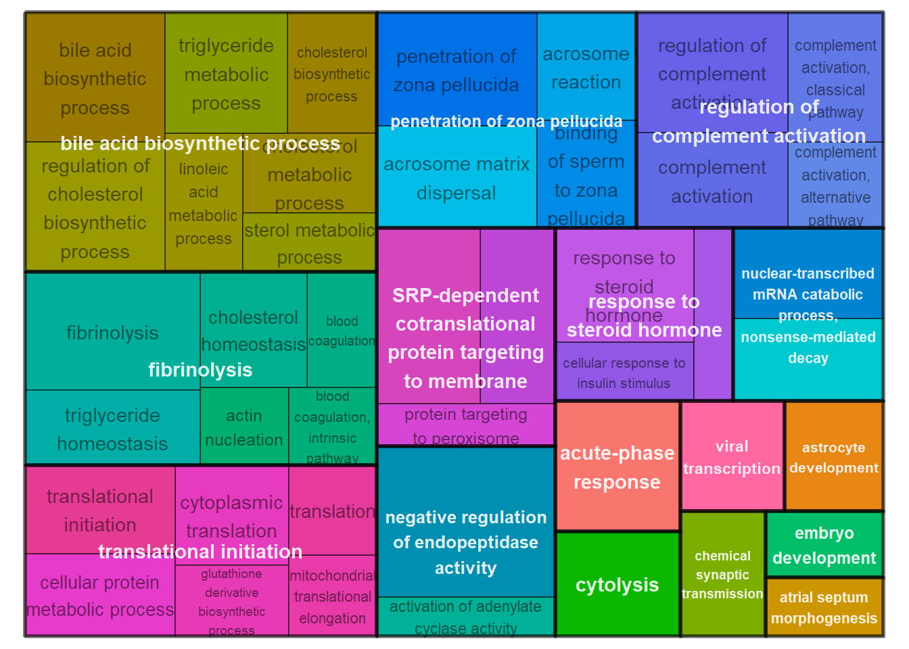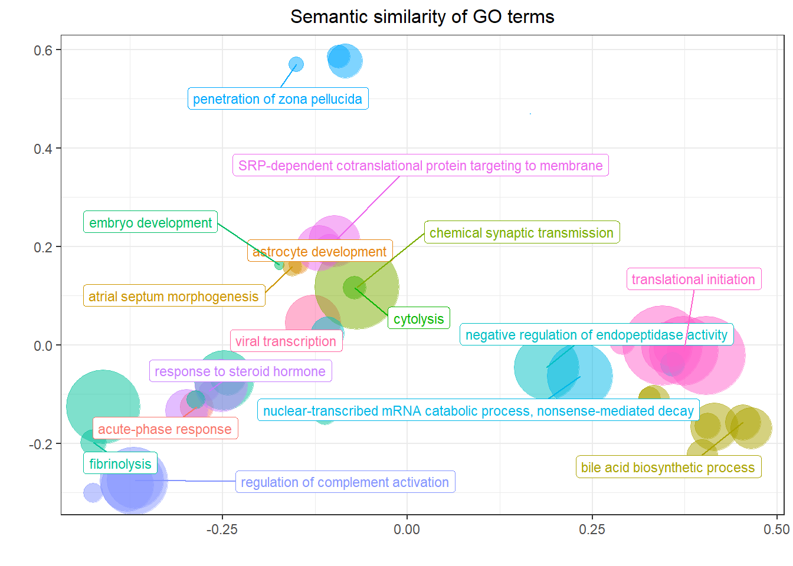
Below is the code for making the figures in the supplement.
g2<- ggarrange(g,gseaplot,p, ncol=1, nrow=3, labels=c("A","B","C"))
g2
ggsave(filename="supp_figure_GON_status.png", plot=g2, device="png" ,height=12, width=8.5, units="in")4.3 Testosterone GON
Given that the behaviors are best correlated with mean T, then this is our variable of interest
4.3.1 Expression data exploration
But first, we need to look at these new data in the gonads with the new subset with respect to our interest variables in the PCA.
gon_behav<- subset(key_behav, Tissue=="GON")
gon_behav<- subset(gon_behav, Batch!="pilot")
gon_behav<- droplevels(gon_behav)
gon_data<- gon_data[,colnames(gon_data) %in% rownames(gon_behav)]
start<- nrow(gon_data)
#remove genes with less than 5 reads
gon_data$avg_count<- apply(gon_data, 1, mean)
gon_data<- gon_data[gon_data$avg_count>5,]
gon_data$avg_count<-NULL
#remove genes where >50% of samples have 0 gene expression
gon_data$percent_0<- apply(gon_data, 1, function(x)length(x[x==0]))
thresh<- ncol(gon_data)/2
gon_data<- gon_data[gon_data$percent_0<=thresh,]
gon_data$percent_0<-NULLBefore filtering we had 16169 genes, after filtering for mean read count and excluding genes where >50% of samples had a count of 0 we are left with 16124…
dd<- DESeqDataSetFromMatrix(countData=gon_data, colData=gon_behav, design= ~ mean_T)
dd<- DESeq(dd)
dd<- dd[which(mcols(dd)$betaConv),] #remove any genes that didn't converge.
#plotDispEsts(dd)
vsd_data<- getVarianceStabilizedData(dd)
#vsd_data<- assay(vsd)
write.csv(counts(dd, normalized=TRUE), "../DE_results/data_GON_norm.csv", row.names=TRUE, quote=FALSE)
p <- pca(vsd_data, metadata = gon_behav)
biplot(p, lab=gon_behav$Harvest_ID, colby="mean_T", shape="Year", legendPosition="right", title="mean T")
eigencorplot(p, metavars = c("time_kill","Year","Status", "mean_T","strength.all_study"))FALSE [1] "Status"
FALSE [1] "Year"
datExpr0<- as.data.frame(t(vsd_data))
#gsg<- goodSamplesGenes(datExpr0, verbose=3)
#gsg$allOK
A=adjacency(t(datExpr0),type="signed")
#-----Calculate whole network connectivity
k=as.numeric(apply(A,2,sum))-1
#-----Standardized connectivity
Z.k=scale(k)
thresholdZ.k=-2.5
outlierColor=ifelse(Z.k<thresholdZ.k,"red","black")
sampleTree = flashClust(as.dist(1-A), method = "average")
#-----Convert traits to colors
datColors=data.frame(outlier=outlierColor)
#-----Plot the sample dendrogram
plotDendroAndColors(sampleTree,groupLabels=names(datColors),
colors=datColors,main="Sample dendrogram and trait heatmap")
4.3.2 Corrections applied
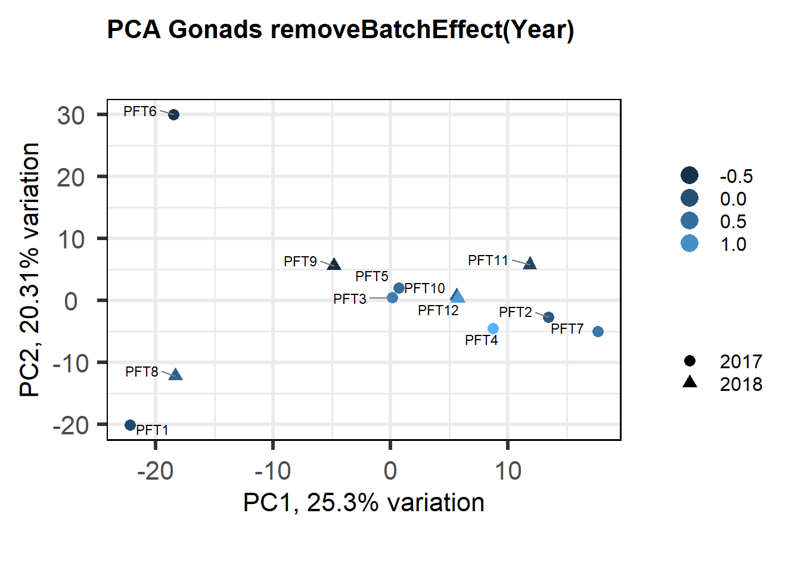
FALSE [1] "Status"
FALSE [1] "Year"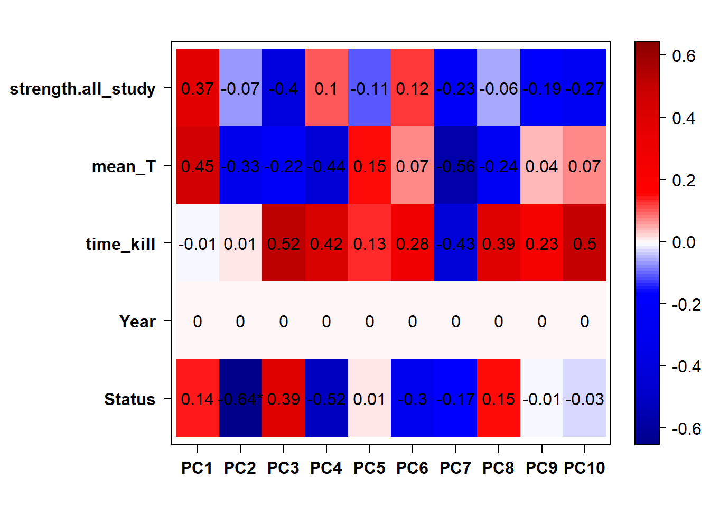
4.3.3 Analysis
DESeq model specification ~ Year + mean_T
This chunk also includes a function I wrote to remove highly influential observations (as measured by Cook’s Distance) from the continuous data. I know from previous iterations of this analysis that there are observations that are highly influential and also DESeq2 does not exclude these from the results in continuous data.
dd<- DESeqDataSetFromMatrix(countData=gon_data, colData=gon_behav, design= ~ Year + mean_T)
dd<- DESeq(dd)
dd<- dd[which(mcols(dd)$betaConv),]
res<- results(dd, alpha=0.1)
summary(res)FALSE
FALSE out of 16124 with nonzero total read count
FALSE adjusted p-value < 0.1
FALSE LFC > 0 (up) : 33, 0.2%
FALSE LFC < 0 (down) : 111, 0.69%
FALSE outliers [1] : 0, 0%
FALSE low counts [2] : 0, 0%
FALSE (mean count < 5)
FALSE [1] see 'cooksCutoff' argument of ?results
FALSE [2] see 'independentFiltering' argument of ?resultsrm_continuous_outliers<- function(deseq=x, results=y, pct=0.98){
cooks<- as.data.frame(assays(deseq)[["cooks"]])
p=ncol(model.matrix(design(deseq), colData(deseq)))
n=nrow(colData(deseq))
cd_cutoff<- qf(pct,p,n-p)
out<- as.data.frame(t(apply(cooks, 1, function(x){ x > cd_cutoff })))
out$outlier<- apply(out,1, any)
outliers<- rownames(out)[out$outlier==TRUE]
results$padj[rownames(results) %in% outliers]<-NA
results$pvalue[rownames(results) %in% outliers]<-NA
return(results)
}
res<- rm_continuous_outliers(dd,res)
res<- res[order(res$padj),]
summary(res)FALSE
FALSE out of 16124 with nonzero total read count
FALSE adjusted p-value < 0.1
FALSE LFC > 0 (up) : 33, 0.2%
FALSE LFC < 0 (down) : 111, 0.69%
FALSE outliers [1] : 37, 0.23%
FALSE low counts [2] : 0, 0%
FALSE (mean count < 5)
FALSE [1] see 'cooksCutoff' argument of ?results
FALSE [2] see 'independentFiltering' argument of ?resultsmean_T_res<- data.frame(res[order(rownames(res)),])
mean_T_res$gene<- row.names(mean_T_res)
write.csv(mean_T_res, file="../DE_results/results_GON_mean_T.csv", row.names=TRUE)
par(mfrow=c(1,2))
DESeq2::plotMA(res, ylim = c(-2, 2), main="Gonads Mean T")
hist(res$pvalue, breaks=20, col="grey", main="", xlab="uncorrected P-value")
dev.off()FALSE null device
FALSE 1
4.3.4 Gene Ontology
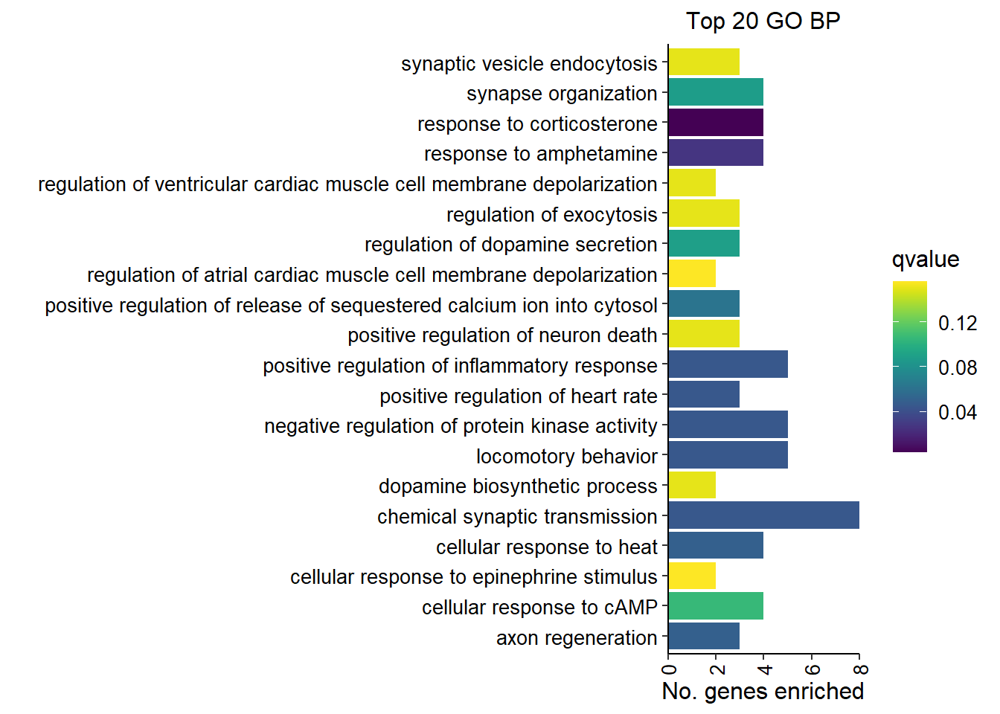| ID | Description | GeneRatio | BgRatio | pvalue | p.adjust | qvalue | geneID | Count |
|---|---|---|---|---|---|---|---|---|
| GO:0051412 | response to corticosterone | 4/124 | 13/12501 | 0.0000062 | 0.0044303 | 0.0039963 | AVPR1A/LOC113992757/STAR/TH | 4 |
| GO:0001975 | response to amphetamine | 4/124 | 24/12501 | 0.0000840 | 0.0302523 | 0.0272890 | DBH/RGS4/SLC18A2/TH | 4 |
| GO:0050729 | positive regulation of inflammatory response | 5/124 | 57/12501 | 0.0002455 | 0.0500987 | 0.0451914 | AGTR1/IFI35/LOC114003559/PDE2A/SNCA | 5 |
| GO:0007626 | locomotory behavior | 5/124 | 59/12501 | 0.0002889 | 0.0500987 | 0.0451914 | C1QL1/CHRNA3/DBH/SLC18A2/TH | 5 |
| GO:0010460 | positive regulation of heart rate | 3/124 | 15/12501 | 0.0003973 | 0.0500987 | 0.0451914 | AVPR1A/RGS4/SCN3B | 3 |
| GO:0006469 | negative regulation of protein kinase activity | 5/124 | 64/12501 | 0.0004230 | 0.0500987 | 0.0451914 | LOC113982361/LOC114003559/SNCA/SOCS3/THY1 | 5 |
| GO:0007268 | chemical synaptic transmission | 8/124 | 184/12501 | 0.0004871 | 0.0500987 | 0.0451914 | CHRNA3/DBH/GABRB1/HTR1E/SLC18A2/SNCA/SNCG/SYT1 | 8 |
| GO:0034605 | cellular response to heat | 4/124 | 40/12501 | 0.0006394 | 0.0557705 | 0.0503076 | BAG3/EIF2S1/PDCD6/STAC | 4 |
| GO:0031103 | axon regeneration | 3/124 | 18/12501 | 0.0006971 | 0.0557705 | 0.0503076 | GAP43/ISL1/LOC113990764 | 3 |
| GO:0051281 | positive regulation of release of sequestered calcium ion into cytosol | 3/124 | 20/12501 | 0.0009599 | 0.0691153 | 0.0623452 | CEMIP/SNCA/THY1 | 3 |
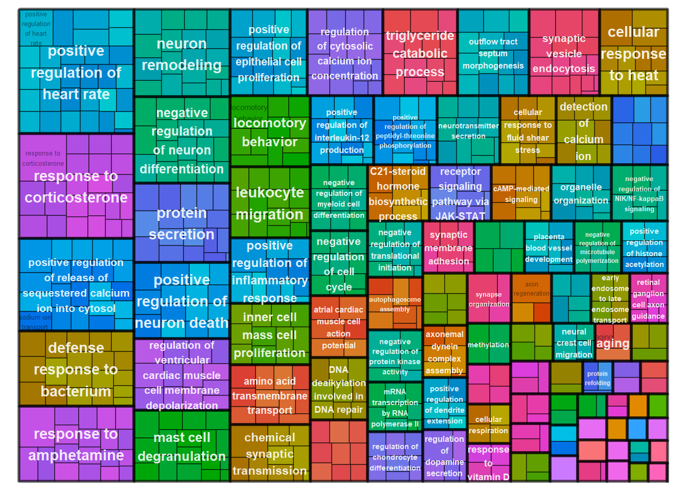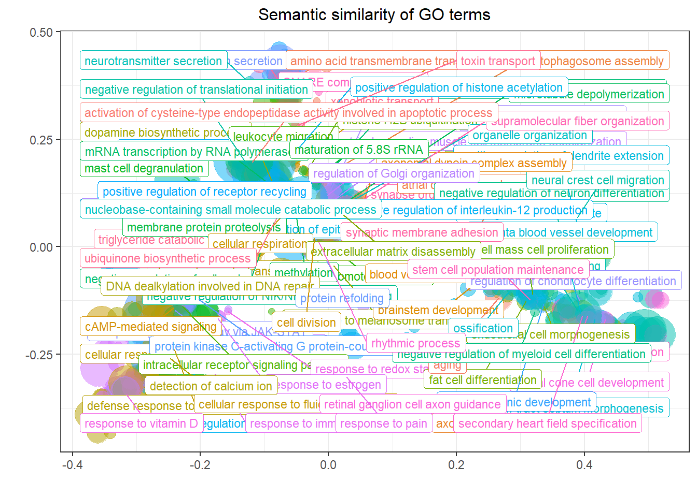
4.3.5 mean T x Status
For pulling out candidate genes with interactions
dd<- DESeqDataSetFromMatrix(countData=gon_data, colData=gon_behav, design= ~ Year + Status + mean_T + Status:mean_T)
dd<- DESeq(dd)
dd<- dd[which(mcols(dd)$betaConv),]
res<- results(dd, alpha=0.1, name = "Statusterritorial.mean_T")
res<- rm_continuous_outliers(dd,res)
res<- res[order(res$padj),]
summary(res)FALSE
FALSE out of 16124 with nonzero total read count
FALSE adjusted p-value < 0.1
FALSE LFC > 0 (up) : 6, 0.037%
FALSE LFC < 0 (down) : 9, 0.056%
FALSE outliers [1] : 29, 0.18%
FALSE low counts [2] : 311, 1.9%
FALSE (mean count < 8)
FALSE [1] see 'cooksCutoff' argument of ?results
FALSE [2] see 'independentFiltering' argument of ?resultsinteraction_res<- as.data.frame(res)
interaction_res$gene<- rownames(res)
interaction_res$Tissue<- "GON"
write.csv(interaction_res, file="../DE_results/interactions_GON_mean_T_Status.csv", row.names=FALSE)
par(mfrow=c(1,2))
DESeq2::plotMA(res, ylim = c(-2, 2), main="GON mean Testosterone * Status")
hist(res$pvalue, breaks=20, col="grey", main="", xlab="uncorrected P-value")
dev.off()FALSE null device
FALSE 1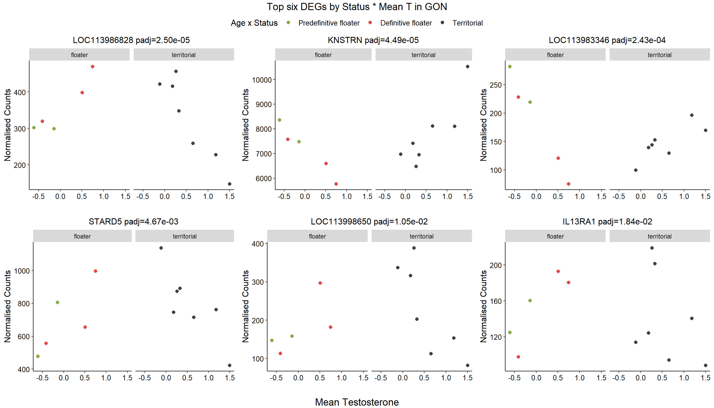
4.4 Strength GON
4.4.1 Analysis
formula ~ Year + scale(Strength)
Without scaling strength, DESeq2 would throw a warning, recommending the variable be scaled.
dd$strength.all_study<- scale(dd$strength.all_study)
design(dd)<- formula(~Year + strength.all_study)
dd<- DESeq(dd)
res<- results(dd, alpha=0.1)
res<- rm_continuous_outliers(dd,res)
summary(res)FALSE
FALSE out of 16124 with nonzero total read count
FALSE adjusted p-value < 0.1
FALSE LFC > 0 (up) : 10, 0.062%
FALSE LFC < 0 (down) : 11, 0.068%
FALSE outliers [1] : 45, 0.28%
FALSE low counts [2] : 0, 0%
FALSE (mean count < 5)
FALSE [1] see 'cooksCutoff' argument of ?results
FALSE [2] see 'independentFiltering' argument of ?resultsres<- res[order(res$padj),]
strength_res<- data.frame(res[order(rownames(res)),])
strength_res$gene<- row.names(strength_res)
write.csv(strength_res, file="../DE_results/results_GON_Strength.csv", row.names=FALSE)
par(mfrow=c(1,2))
DESeq2::plotMA(res, ylim = c(-2, 2), main="GON Social Network Strength")
hist(res$pvalue, breaks=20, col="grey", main="", xlab="uncorrected P-value")
dev.off()FALSE null device
FALSE 1
4.4.2 Gene Ontology

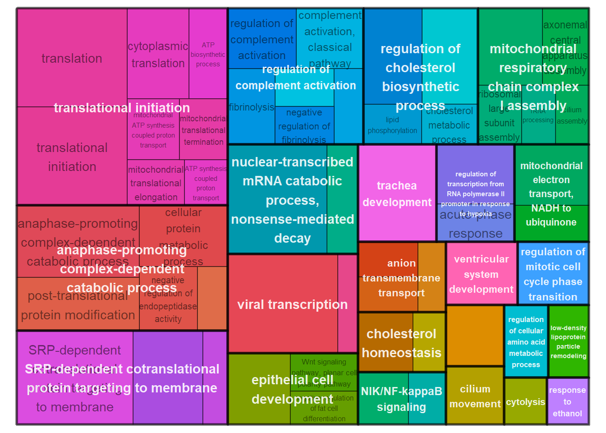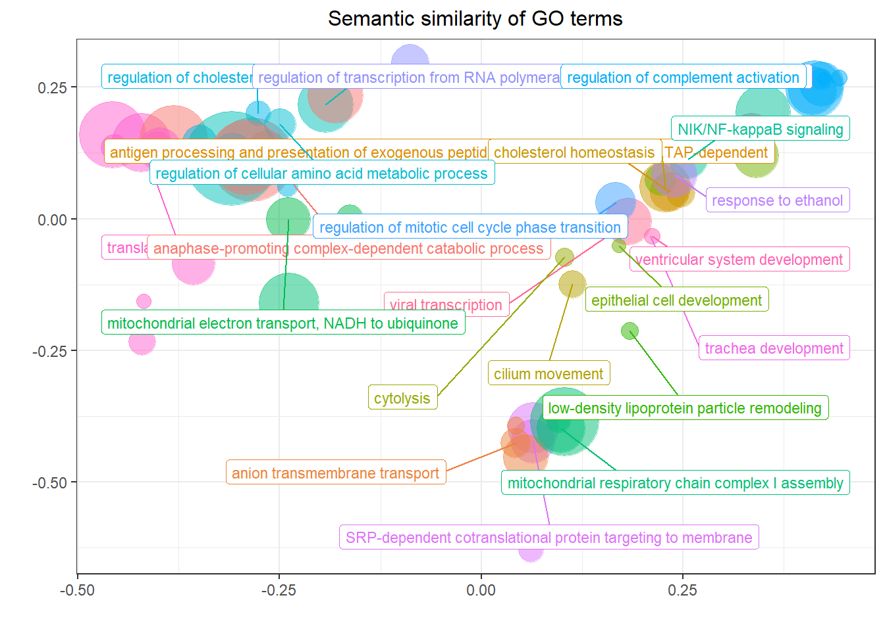
5 Pituitary (PIT)
5.1 Checking the sampling
Before filtering we had 16854 genes, after filtering for mean read count and excluding genes where >50% of samples had a count of 0 we are left with 14812
Before I go into more detail, I am going to check that the sampling is equal across batches with respect to our variables of interest. With respect to Status we have pit samples for 12, with respect to T and the tracking data.
| run1 | run2 | |
|---|---|---|
| floater | 3 | 2 |
| territorial | 5 | 2 |
| 2017 | 2018 | |
|---|---|---|
| run1 | 6 | 2 |
| run2 | 1 | 3 |

5.1.1 Expression data exploration

FALSE [1] "Batch"
FALSE [1] "Status"
FALSE [1] "Year"
5.1.2 Corrections applied
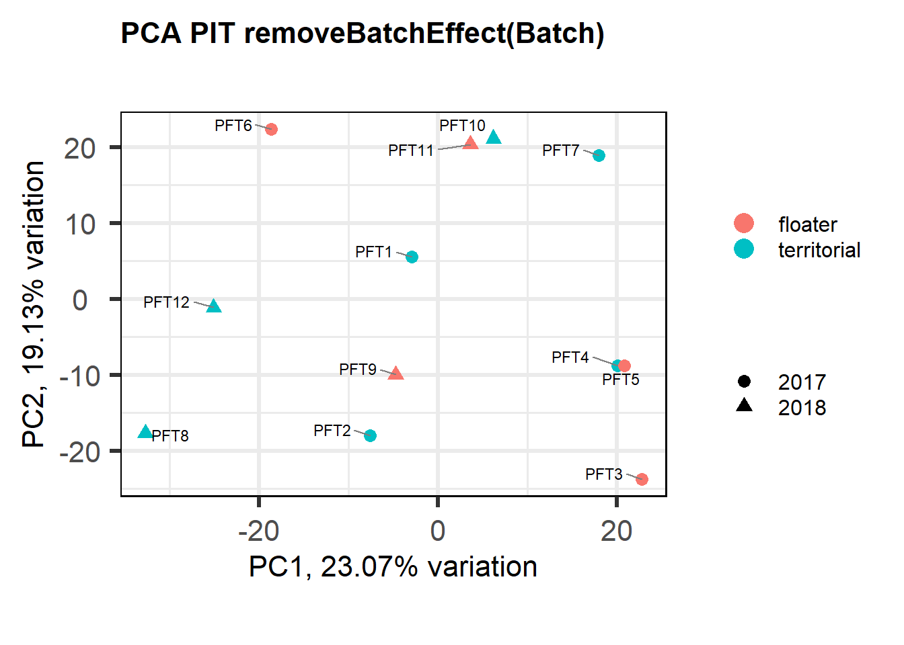
FALSE [1] "Batch"
FALSE [1] "Status"
FALSE [1] "Year"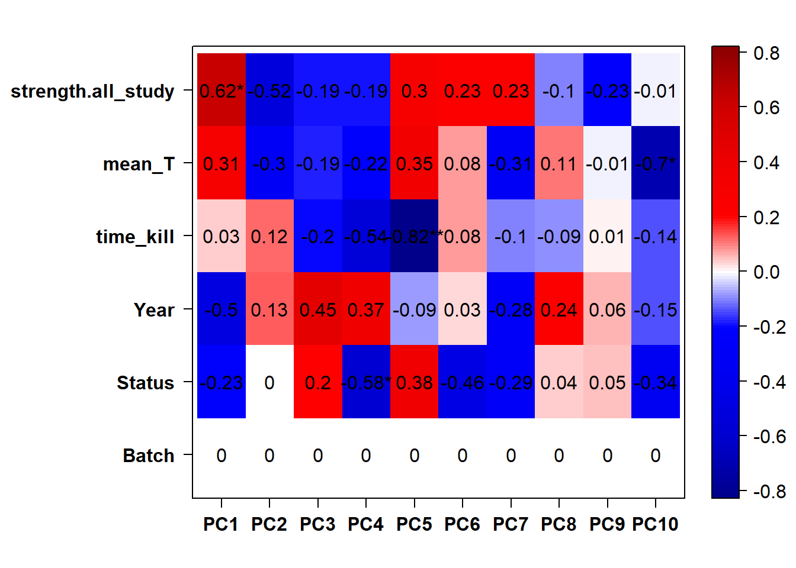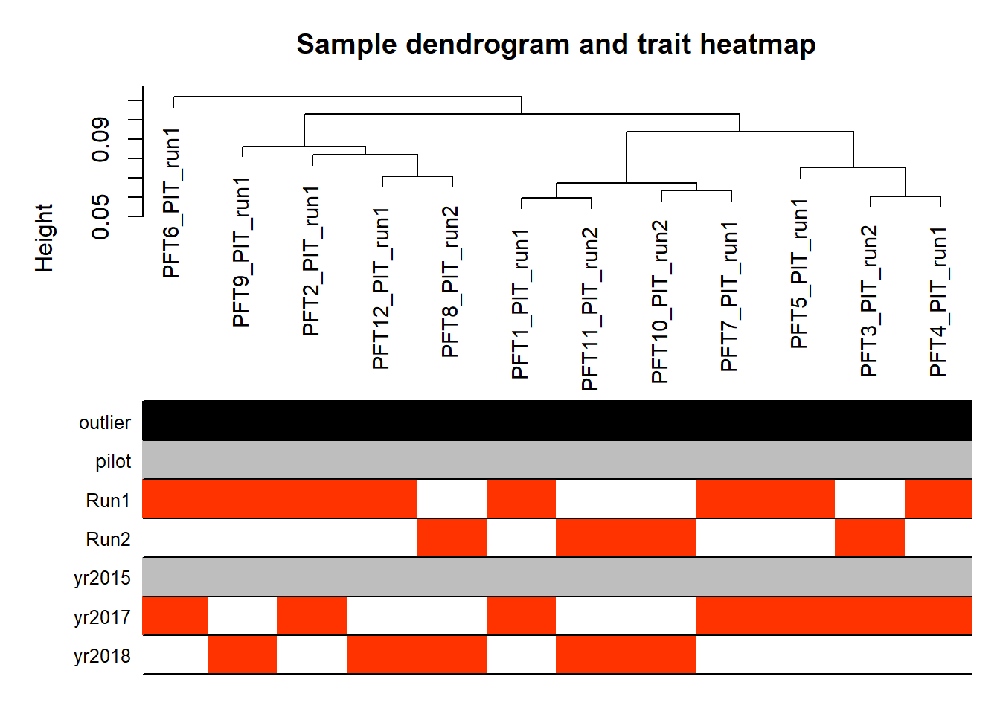
Looks controlling for Batch also removes the association with Year. Let’s just include Batch.
5.2 Status PIT
5.2.1 Analysis
Formula = ~ Batch + Status
In this section, I find results with different p-value distributions. I was following THIS tutorial by Bernd Klaus and it recommended using fdrtool to correct these p-values.
design(dd)<- formula(~ Batch + Status)
dd<- DESeq(dd)
res<- results(dd, alpha=0.1)
res1<- res[!is.na(res$padj),]
res1<- res1[!is.na(res1$pvalue),]
res1$padj<- NULL
res1.fdr<- fdrtool(res1$stat, statistic="normal", plot=FALSE, verbose=FALSE)
res1$padj<- p.adjust(res1.fdr$pval, method="BH")
outs<- res[is.na(res$padj),] # add those outliers back in...
res1<- rbind(res1, outs)
res1<- res1[order(res1$padj),]
summary(res1)FALSE
FALSE out of 14812 with nonzero total read count
FALSE adjusted p-value < 0.1
FALSE LFC > 0 (up) : 8, 0.054%
FALSE LFC < 0 (down) : 6, 0.041%
FALSE outliers [1] : 91, 0.61%
FALSE low counts [2] : 0, 0%
FALSE (mean count < 4)
FALSE [1] see 'cooksCutoff' argument of ?results
FALSE [2] see 'independentFiltering' argument of ?resultsstatus_res<- data.frame(res1)
status_res$gene<- row.names(status_res)
status_res<- status_res[order(status_res$gene),]
write.csv(status_res, file="../DE_results/results_PIT_status.csv", row.names=FALSE)
par(mfrow=c(2,2))
DESeq2::plotMA(res, ylim = c(-2, 2), main="Pituitary Territorial vs Floater")
hist(res$pvalue, breaks=20, col="grey", main="", xlab="uncorrected P-value")
DESeq2::plotMA(res1, ylim = c(-2, 2), main="FDR tool corrected PIT Status")
hist(res1.fdr$pval, breaks=20, col="grey", main="P-value correction 'fdrtool'", xlab="'Corrected' P-value")
dev.off()FALSE null device
FALSE 1
5.2.2 Gene Ontology

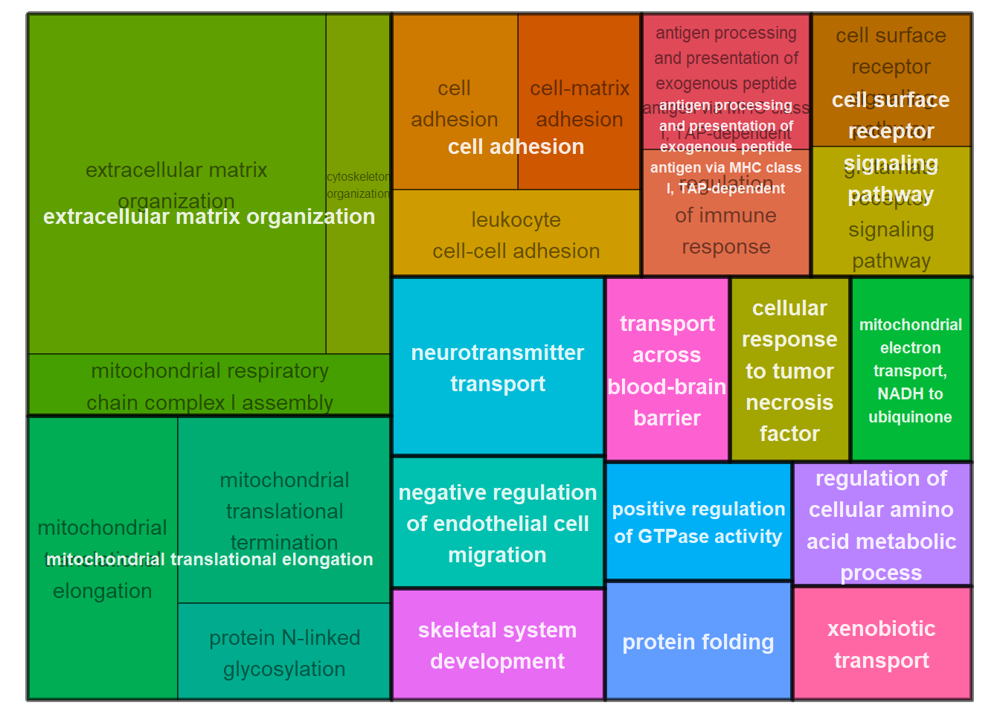
5.3 Testosterone PIT
5.3.1 Analysis
FALSE
FALSE out of 14812 with nonzero total read count
FALSE adjusted p-value < 0.1
FALSE LFC > 0 (up) : 14, 0.095%
FALSE LFC < 0 (down) : 5, 0.034%
FALSE outliers [1] : 62, 0.42%
FALSE low counts [2] : 0, 0%
FALSE (mean count < 4)
FALSE [1] see 'cooksCutoff' argument of ?results
FALSE [2] see 'independentFiltering' argument of ?results
FALSE null device
FALSE 1
5.3.2 Gene Ontology


5.3.3 mean T x Status
FALSE
FALSE out of 14812 with nonzero total read count
FALSE adjusted p-value < 0.1
FALSE LFC > 0 (up) : 24, 0.16%
FALSE LFC < 0 (down) : 67, 0.45%
FALSE outliers [1] : 37, 0.25%
FALSE low counts [2] : 0, 0%
FALSE (mean count < 4)
FALSE [1] see 'cooksCutoff' argument of ?results
FALSE [2] see 'independentFiltering' argument of ?results
FALSE null device
FALSE 1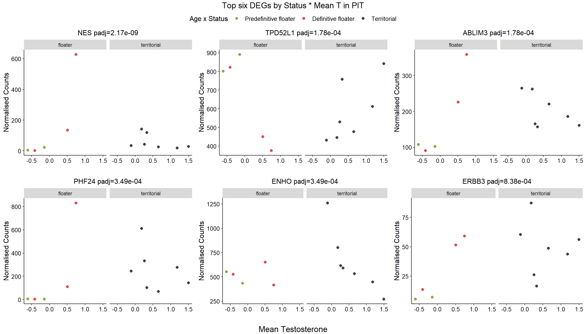
5.4 Strength PIT
5.4.1 Analysis
Formula: ~ Batch + scale(Strength)
FALSE
FALSE out of 14812 with nonzero total read count
FALSE adjusted p-value < 0.1
FALSE LFC > 0 (up) : 387, 2.6%
FALSE LFC < 0 (down) : 113, 0.76%
FALSE outliers [1] : 207, 1.4%
FALSE low counts [2] : 0, 0%
FALSE (mean count < 4)
FALSE [1] see 'cooksCutoff' argument of ?results
FALSE [2] see 'independentFiltering' argument of ?results
FALSE null device
FALSE 1

As you can see above, PFT3 has consistently high leverage on the social network analysis. Even if I play around with the outlier theshold this I am always getting non-linear plots like above. So, let’s see what happens when I remove this sample.
5.4.2 Re-analysis - outlier removed
FALSE
FALSE out of 14812 with nonzero total read count
FALSE adjusted p-value < 0.1
FALSE LFC > 0 (up) : 109, 0.74%
FALSE LFC < 0 (down) : 13, 0.088%
FALSE outliers [1] : 58, 0.39%
FALSE low counts [2] : 0, 0%
FALSE (mean count < 2)
FALSE [1] see 'cooksCutoff' argument of ?results
FALSE [2] see 'independentFiltering' argument of ?results
FALSE null device
FALSE 1
5.4.3 Gene Ontology

| ID | Description | GeneRatio | BgRatio | pvalue | p.adjust | qvalue | geneID | Count |
|---|---|---|---|---|---|---|---|---|
| GO:0046849 | bone remodeling | 3/100 | 14/12040 | 0.0001894 | 0.0765610 | 0.0748556 | LTBP3/TPH1/WNT16 | 3 |
| GO:0007015 | actin filament organization | 6/100 | 109/12040 | 0.0002867 | 0.0765610 | 0.0748556 | CORO1B/INPPL1/LOC113988218/LOC113992312/SAMD14/SORBS3 | 6 |
| GO:0071260 | cellular response to mechanical stimulus | 4/100 | 59/12040 | 0.0014369 | 0.2557690 | 0.2500718 | DAG1/PDE2A/TNFRSF10B/TNFRSF8 | 4 |
| GO:0006833 | water transport | 2/100 | 10/12040 | 0.0029428 | 0.2994552 | 0.2927849 | LOC113983498/LOC113999239 | 2 |
| GO:0006790 | sulfur compound metabolic process | 2/100 | 11/12040 | 0.0035774 | 0.2994552 | 0.2927849 | LOC113994298/SUOX | 2 |
| GO:1903779 | regulation of cardiac conduction | 3/100 | 39/12040 | 0.0040906 | 0.2994552 | 0.2927849 | LOC114003417/NPR1/STIM1 | 3 |
| GO:1901796 | regulation of signal transduction by p53 class mediator | 5/100 | 129/12040 | 0.0043682 | 0.2994552 | 0.2927849 | CDK5R1/LOC113989520/LOC113998423/PRKAG1/STK11 | 5 |
| GO:0010212 | response to ionizing radiation | 3/100 | 42/12040 | 0.0050470 | 0.2994552 | 0.2927849 | BABAM1/LOC113998423/STK11 | 3 |
| GO:0045860 | positive regulation of protein kinase activity | 3/100 | 42/12040 | 0.0050470 | 0.2994552 | 0.2927849 | DAG1/MAPRE3/PRKAG1 | 3 |
| GO:0002009 | morphogenesis of an epithelium | 2/100 | 14/12040 | 0.0058237 | 0.3109833 | 0.3040562 | DAG1/SLC9A3R1 | 2 |


6 Ventromedial Hypothalamus (VMH)
6.1 Checking the sampling
Before filtering we had 16854 genes, after filtering for mean read count and excluding genes where >50% of samples had a count of 0 we are left with 15220
Before I go into more detail, I am going to check that the sampling is equal across batches with respect to our variables of interest. With respect to Status we have vmh samples for 16, with respect to T and the tracking data.
| pilot | run1 | run2 | |
|---|---|---|---|
| floater | 2 | 4 | 1 |
| territorial | 2 | 7 | 0 |
| 2015 | 2017 | 2018 | |
|---|---|---|---|
| pilot | 4 | 0 | 0 |
| run1 | 0 | 6 | 5 |
| run2 | 0 | 1 | 0 |

The majority of our data in VMH is in run 1.
6.1.1 Expression data exploration

FALSE [1] "Batch"
FALSE [1] "Status"
FALSE [1] "Year"

6.1.2 Corrections applied
FALSE [1] "Status"
FALSE [1] "Year"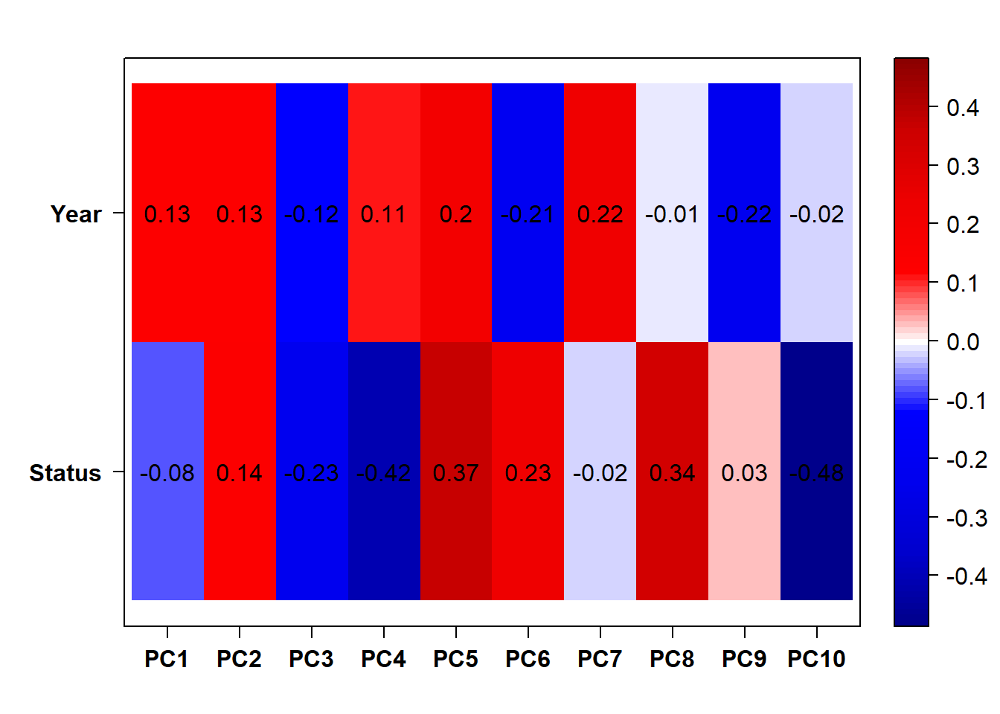
Looks like controlling for Batch is sufficient here, as Batch is highly correlated with Year.
6.2 Status VMH
6.2.1 Analysis
Formula = ~ Batch + Status
FALSE
FALSE out of 15220 with nonzero total read count
FALSE adjusted p-value < 0.1
FALSE LFC > 0 (up) : 0, 0%
FALSE LFC < 0 (down) : 3, 0.02%
FALSE outliers [1] : 4, 0.026%
FALSE low counts [2] : 0, 0%
FALSE (mean count < 5)
FALSE [1] see 'cooksCutoff' argument of ?results
FALSE [2] see 'independentFiltering' argument of ?results
FALSE null device
FALSE 1
6.2.2 Gene Ontology
 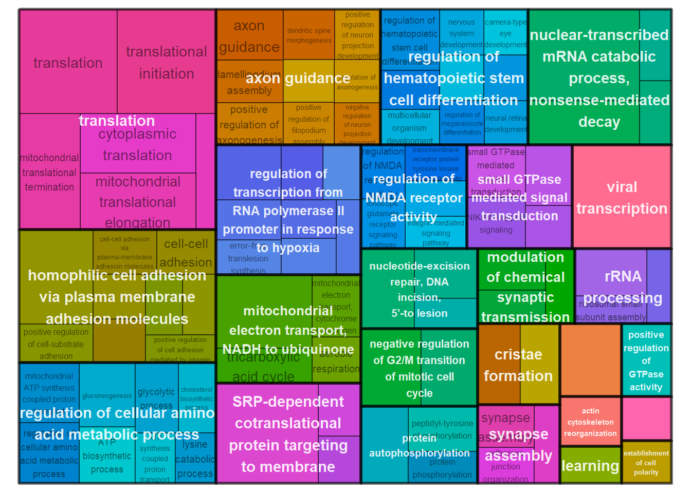
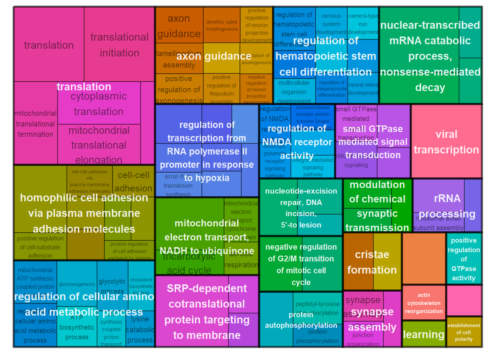
6.3 Testosterone VMH
6.3.1 Expression data exploration

FALSE [1] "Batch"
FALSE [1] "Status"
FALSE [1] "Year"
6.3.2 Corrections applied
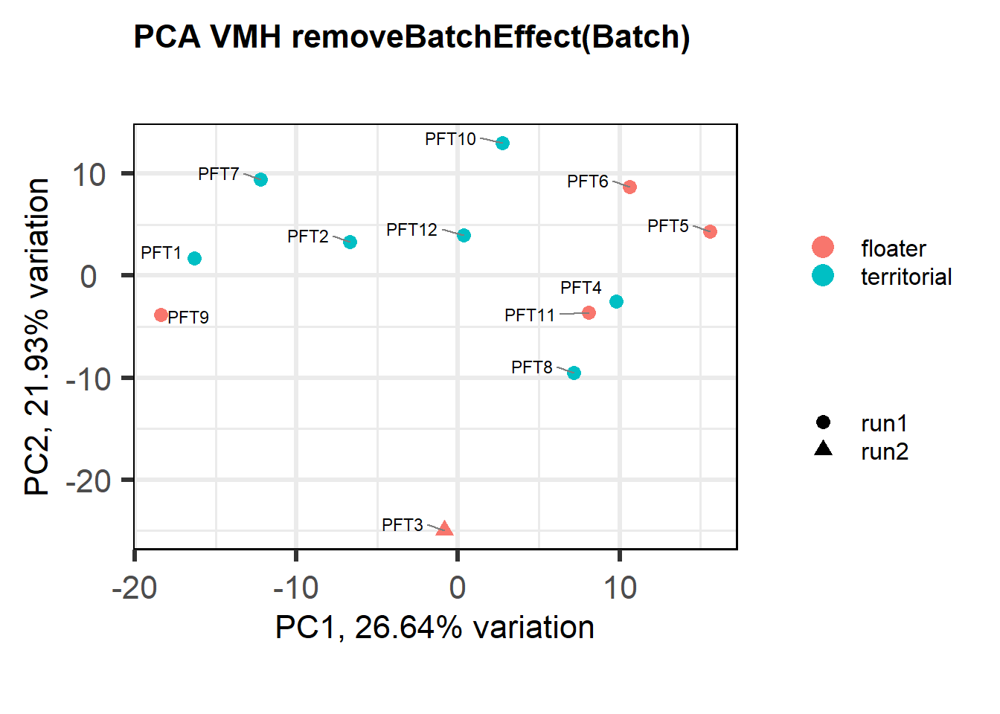
FALSE [1] "Batch"
FALSE [1] "Status"
FALSE [1] "Year"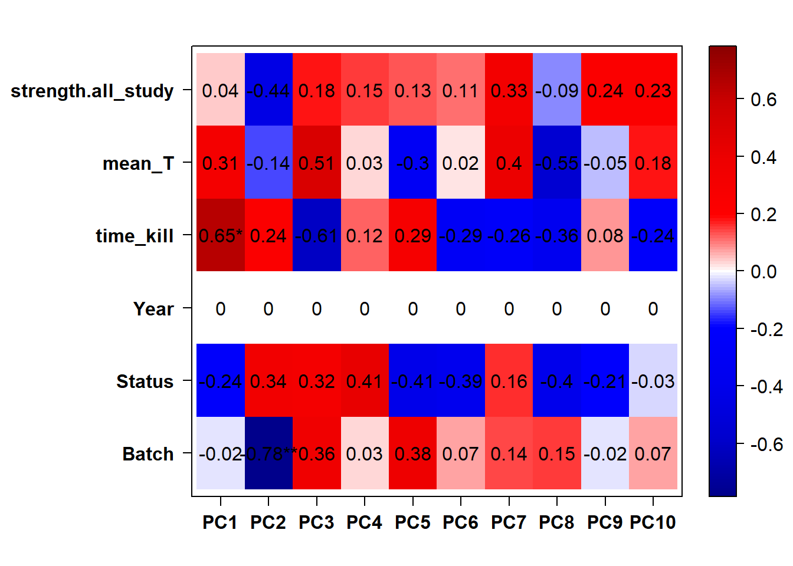
FALSE Flagging genes and samples with too many missing values...
FALSE ..step 1FALSE [1] TRUE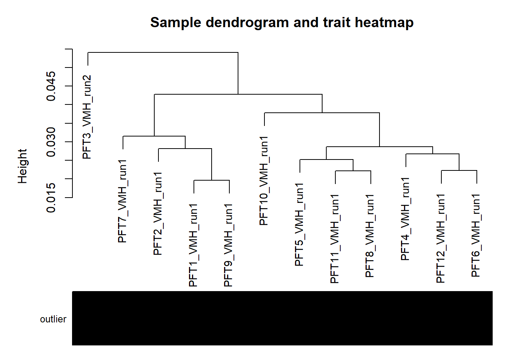
Batch does not account for year here… so have to include both…
6.3.3 Analysis
Formula: ~ Batch + Year + mean_T
FALSE
FALSE out of 15162 with nonzero total read count
FALSE adjusted p-value < 0.1
FALSE LFC > 0 (up) : 3, 0.02%
FALSE LFC < 0 (down) : 8, 0.053%
FALSE outliers [1] : 52, 0.34%
FALSE low counts [2] : 0, 0%
FALSE (mean count < 5)
FALSE [1] see 'cooksCutoff' argument of ?results
FALSE [2] see 'independentFiltering' argument of ?results
FALSE null device
FALSE 1
6.3.4 Gene Ontology

6.3.5 mean T x Status
FALSE
FALSE out of 15162 with nonzero total read count
FALSE adjusted p-value < 0.1
FALSE LFC > 0 (up) : 45, 0.3%
FALSE LFC < 0 (down) : 54, 0.36%
FALSE outliers [1] : 141, 0.93%
FALSE low counts [2] : 275, 1.8%
FALSE (mean count < 7)
FALSE [1] see 'cooksCutoff' argument of ?results
FALSE [2] see 'independentFiltering' argument of ?results
FALSE null device
FALSE 1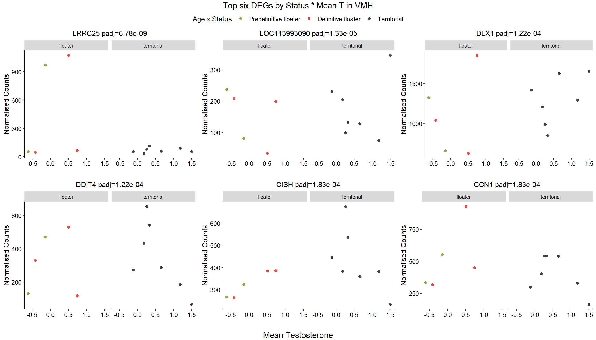
6.4 Strength VMH
6.4.1 Analysis
Formula ~ Batch + Year + scale(Strength)
FALSE
FALSE out of 15162 with nonzero total read count
FALSE adjusted p-value < 0.1
FALSE LFC > 0 (up) : 28, 0.18%
FALSE LFC < 0 (down) : 19, 0.13%
FALSE outliers [1] : 82, 0.54%
FALSE low counts [2] : 0, 0%
FALSE (mean count < 5)
FALSE [1] see 'cooksCutoff' argument of ?results
FALSE [2] see 'independentFiltering' argument of ?results
FALSE null device
FALSE 1
6.4.2 Gene Ontology


7 Anterior Hypothalamus (AH)
7.1 Checking the sampling
For the AH, we started with 16854 genes but after filering we have 14926 genes. Before I go into more detail, I am going to check that the sampling is equal across batches with respect to our variables of interest. With respect to Status we have ah samples for 11, with respect to T and the tracking data.
| run2 | |
|---|---|
| floater | 4 |
| territorial | 7 |
| 2017 | 2018 | |
|---|---|---|
| run2 | 6 | 5 |
7.1.1 Expression data exploration

FALSE [1] "Status"
FALSE [1] "Year"
FALSE Flagging genes and samples with too many missing values...
FALSE ..step 1FALSE [1] TRUE
7.1.2 Corrections applied
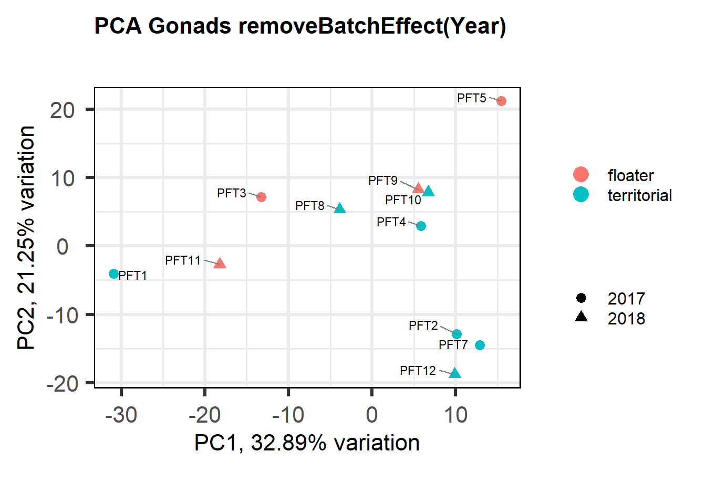
FALSE Flagging genes and samples with too many missing values...
FALSE ..step 1FALSE [1] TRUE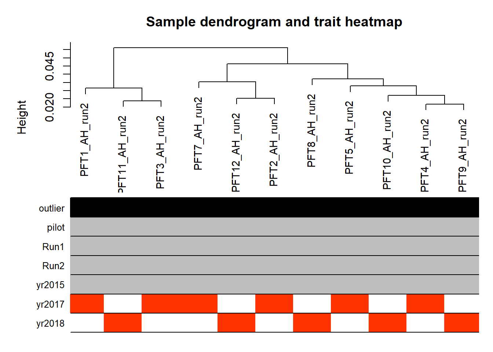
PFT1 and PFT11 cluster with the BSTm as previously identified by the brain tissue PCA plot and the all tissue WGCNA dendrogram. We know that there were issues with the sectioning plane in individual PFT1 that could affect this tissue, but not PFT11.
The effects of removing these samples will be explored for each analysis vs removing a randomly selected pair of samples. These results (not shown) showed similar effects, so these samples were not excluded.
7.2 Status AH
7.2.1 Analysis
Formula = ~ Year + Status
FALSE
FALSE out of 14926 with nonzero total read count
FALSE adjusted p-value < 0.1
FALSE LFC > 0 (up) : 0, 0%
FALSE LFC < 0 (down) : 1, 0.0067%
FALSE outliers [1] : 28, 0.19%
FALSE low counts [2] : 0, 0%
FALSE (mean count < 5)
FALSE [1] see 'cooksCutoff' argument of ?results
FALSE [2] see 'independentFiltering' argument of ?resultsFALSE
FALSE out of 14926 with nonzero total read count
FALSE adjusted p-value < 0.1
FALSE LFC > 0 (up) : 0, 0%
FALSE LFC < 0 (down) : 1, 0.0067%
FALSE outliers [1] : 28, 0.19%
FALSE low counts [2] : 0, 0%
FALSE (mean count < 5)
FALSE [1] see 'cooksCutoff' argument of ?results
FALSE [2] see 'independentFiltering' argument of ?results
FALSE null device
FALSE 1
7.2.2 Gene Ontology
 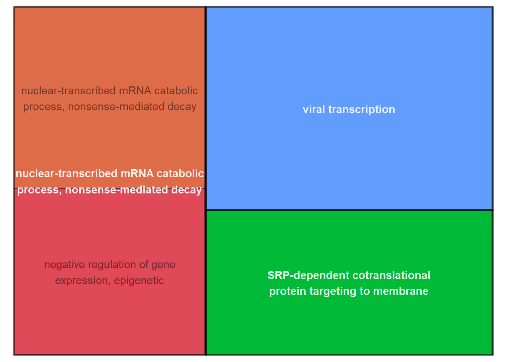
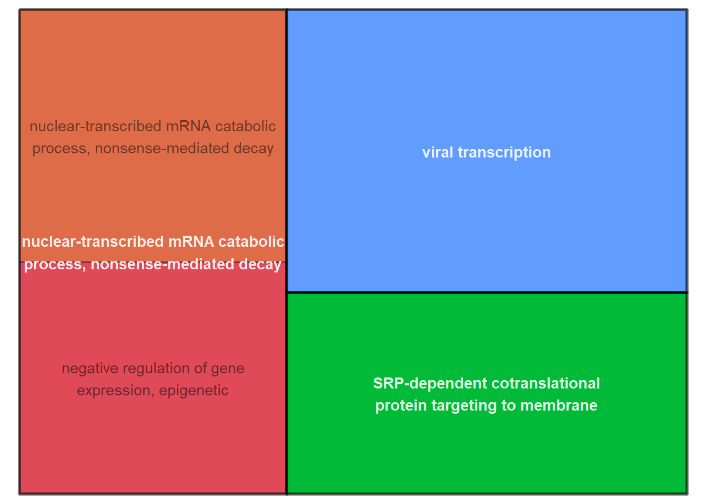
7.3 Testosterone AH
7.3.1 Analysis
FALSE
FALSE out of 14926 with nonzero total read count
FALSE adjusted p-value < 0.1
FALSE LFC > 0 (up) : 2, 0.013%
FALSE LFC < 0 (down) : 2, 0.013%
FALSE outliers [1] : 23, 0.15%
FALSE low counts [2] : 0, 0%
FALSE (mean count < 5)
FALSE [1] see 'cooksCutoff' argument of ?results
FALSE [2] see 'independentFiltering' argument of ?results
FALSE null device
FALSE 1
7.3.2 Gene Ontology
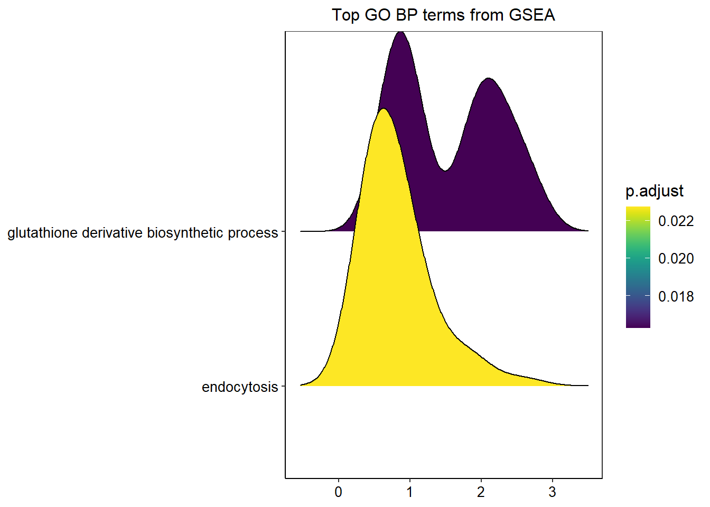
7.3.3 mean T x Status
FALSE
FALSE out of 14926 with nonzero total read count
FALSE adjusted p-value < 0.1
FALSE LFC > 0 (up) : 14, 0.094%
FALSE LFC < 0 (down) : 27, 0.18%
FALSE outliers [1] : 29, 0.19%
FALSE low counts [2] : 0, 0%
FALSE (mean count < 5)
FALSE [1] see 'cooksCutoff' argument of ?results
FALSE [2] see 'independentFiltering' argument of ?results
FALSE null device
FALSE 1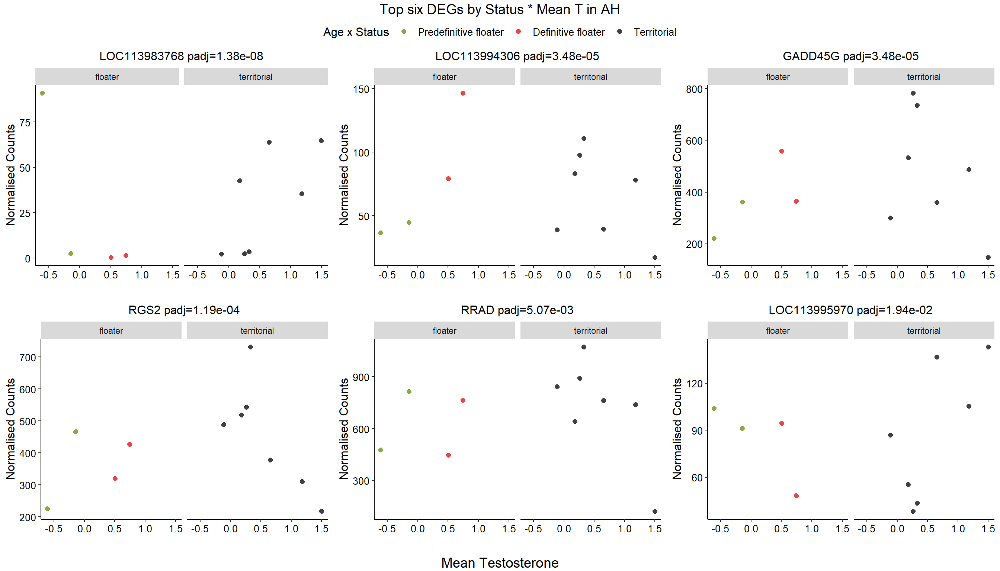
7.4 Strength AH
7.4.1 Analysis
Formula ~ scale(Strength)
FALSE
FALSE out of 14893 with nonzero total read count
FALSE adjusted p-value < 0.1
FALSE LFC > 0 (up) : 76, 0.51%
FALSE LFC < 0 (down) : 109, 0.73%
FALSE outliers [1] : 0, 0%
FALSE low counts [2] : 0, 0%
FALSE (mean count < 5)
FALSE [1] see 'cooksCutoff' argument of ?results
FALSE [2] see 'independentFiltering' argument of ?results
FALSE null device
FALSE 1
7.4.2 Gene Ontology
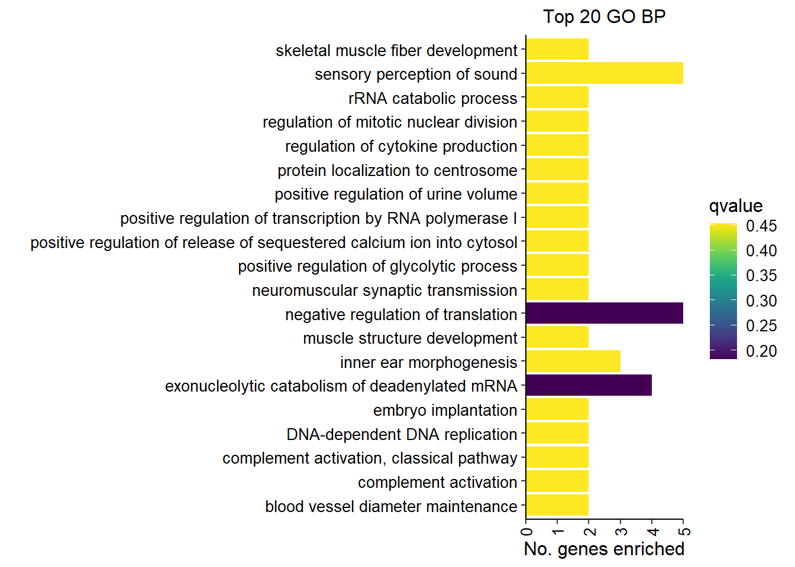| ID | Description | GeneRatio | BgRatio | pvalue | p.adjust | qvalue | geneID | Count |
|---|---|---|---|---|---|---|---|---|
| GO:0043928 | exonucleolytic catabolism of deadenylated mRNA | 4/122 | 37/12117 | 0.0004997 | 0.1824968 | 0.1824968 | DDX6/DIS3/LOC113984931/LOC113990767 | 4 |
| GO:0017148 | negative regulation of translation | 5/122 | 69/12117 | 0.0006403 | 0.1824968 | 0.1824968 | DDX6/EIF4E3/IGF2BP3/LOC113999202/PAIP2B | 5 |
| GO:0061061 | muscle structure development | 2/122 | 11/12117 | 0.0052112 | 0.4535007 | 0.4535007 | CAPN3/PRICKLE4 | 2 |
| GO:0042472 | inner ear morphogenesis | 3/122 | 39/12117 | 0.0069892 | 0.4535007 | 0.4535007 | HMX2/HMX3/USH1C | 3 |
| GO:0007605 | sensory perception of sound | 5/122 | 123/12117 | 0.0080150 | 0.4535007 | 0.4535007 | EPS8L2/LOC113987015/OTOG/TSPEAR/USH1C | 5 |
| GO:0016075 | rRNA catabolic process | 2/122 | 14/12117 | 0.0084538 | 0.4535007 | 0.4535007 | DIS3/LOC113990767 | 2 |
| GO:0035810 | positive regulation of urine volume | 2/122 | 14/12117 | 0.0084538 | 0.4535007 | 0.4535007 | HAS2/LOC113993563 | 2 |
| GO:0045943 | positive regulation of transcription by RNA polymerase I | 2/122 | 14/12117 | 0.0084538 | 0.4535007 | 0.4535007 | DHX33/LOC113997168 | 2 |
| GO:0007274 | neuromuscular synaptic transmission | 2/122 | 16/12117 | 0.0110025 | 0.4535007 | 0.4535007 | CHAT/STAC3 | 2 |
| GO:0006956 | complement activation | 2/122 | 18/12117 | 0.0138457 | 0.4535007 | 0.4535007 | C1S/C3 | 2 |
8 Paraventricular Nucleus (PVN)
8.1 Checking the sampling
For the PVN, we started with 16854 genes but after filering we have 15151 genes. Before I go into more detail, I am going to check that the sampling is equal across batches with respect to our variables of interest. With respect to Status we have pvn samples for 12, with respect to T and the tracking data.
| run2 | |
|---|---|
| floater | 5 |
| territorial | 7 |
8.1.1 Expression data exploration

FALSE [1] "Status"
FALSE [1] "Year"
FALSE Flagging genes and samples with too many missing values...
FALSE ..step 1FALSE [1] TRUE
Looks like we don’t have any outliers, nor do we need to include Year (or Batch) as a covariate.
8.2 Status PVN
8.2.1 Analysis
Formula = ~ Status
FALSE
FALSE out of 15151 with nonzero total read count
FALSE adjusted p-value < 0.1
FALSE LFC > 0 (up) : 27, 0.18%
FALSE LFC < 0 (down) : 15, 0.099%
FALSE outliers [1] : 19, 0.13%
FALSE low counts [2] : 0, 0%
FALSE (mean count < 2)
FALSE [1] see 'cooksCutoff' argument of ?results
FALSE [2] see 'independentFiltering' argument of ?results
FALSE null device
FALSE 1
8.2.2 Gene Ontology
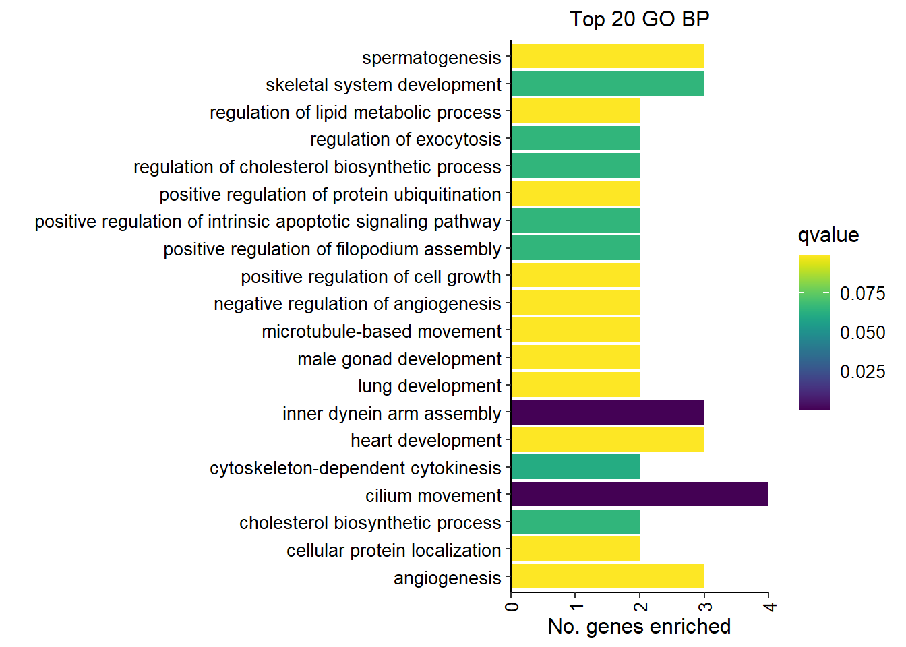| ID | Description | GeneRatio | BgRatio | pvalue | p.adjust | qvalue | geneID | Count |
|---|---|---|---|---|---|---|---|---|
| GO:0003341 | cilium movement | 4/33 | 38/12236 | 0.0000030 | 0.0006673 | 0.0004758 | CFAP73/DNAH1/LOC113981955/TTC25 | 4 |
| GO:0036159 | inner dynein arm assembly | 3/33 | 15/12236 | 0.0000080 | 0.0008750 | 0.0006238 | CFAP73/DNAH1/LOC113981955 | 3 |
| GO:0061640 | cytoskeleton-dependent cytokinesis | 2/33 | 19/12236 | 0.0011721 | 0.0859509 | 0.0612760 | LOC113992196/SEPT4 | 2 |
| GO:2001244 | positive regulation of intrinsic apoptotic signaling pathway | 2/33 | 23/12236 | 0.0017224 | 0.0916478 | 0.0653375 | LOC113992196/SEPT4 | 2 |
| GO:0001501 | skeletal system development | 3/33 | 99/12236 | 0.0023505 | 0.0916478 | 0.0653375 | CNMD/LOC113991284/LOC113997556 | 3 |
| GO:0051491 | positive regulation of filopodium assembly | 2/33 | 31/12236 | 0.0031234 | 0.0916478 | 0.0653375 | LOC113996134/RIPOR2 | 2 |
| GO:0006695 | cholesterol biosynthetic process | 2/33 | 34/12236 | 0.0037492 | 0.0916478 | 0.0653375 | DHCR7/FDFT1 | 2 |
| GO:0017157 | regulation of exocytosis | 2/33 | 34/12236 | 0.0037492 | 0.0916478 | 0.0653375 | LOC113992196/SEPT4 | 2 |
| GO:0045540 | regulation of cholesterol biosynthetic process | 2/33 | 34/12236 | 0.0037492 | 0.0916478 | 0.0653375 | DHCR7/FDFT1 | 2 |
| GO:0034613 | cellular protein localization | 2/33 | 54/12236 | 0.0092476 | 0.1394724 | 0.0994325 | LOC113992196/SEPT4 | 2 |
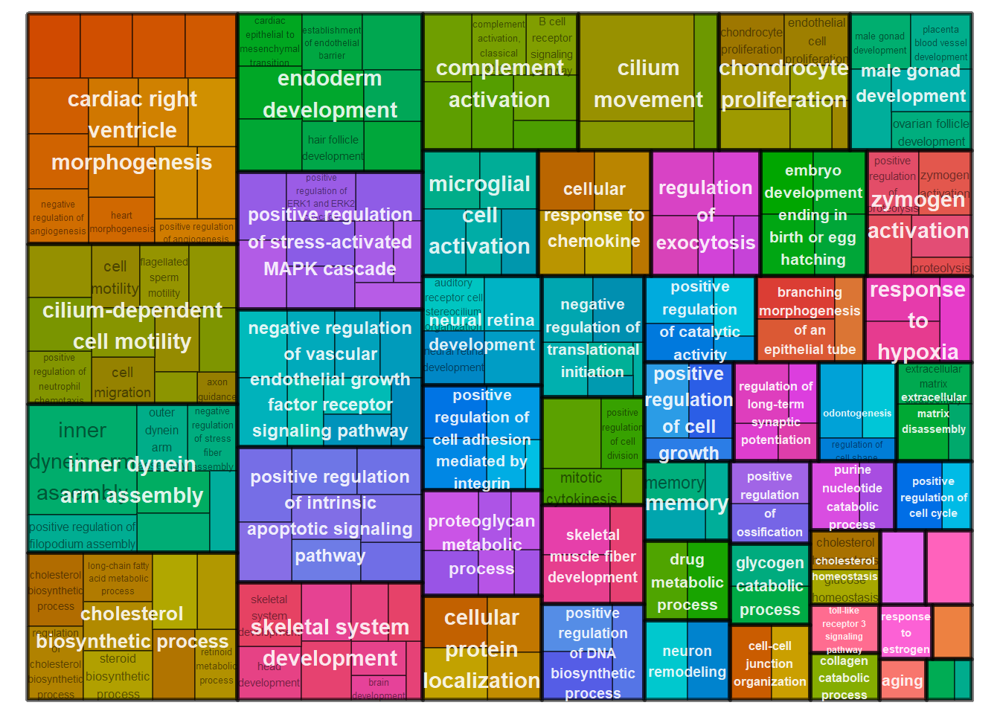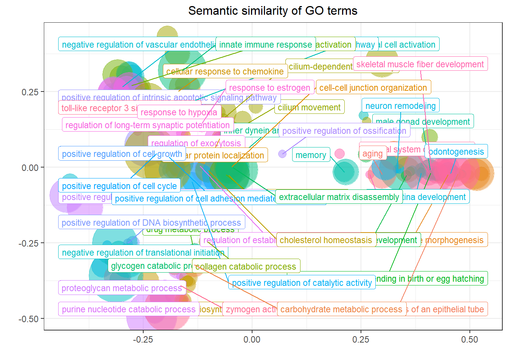
8.3 Testosterone PVN
8.3.1 Analysis
Formula = ~ mean_T
FALSE
FALSE out of 15151 with nonzero total read count
FALSE adjusted p-value < 0.1
FALSE LFC > 0 (up) : 7, 0.046%
FALSE LFC < 0 (down) : 6, 0.04%
FALSE outliers [1] : 0, 0%
FALSE low counts [2] : 0, 0%
FALSE (mean count < 5)
FALSE [1] see 'cooksCutoff' argument of ?results
FALSE [2] see 'independentFiltering' argument of ?results
FALSE null device
FALSE 1
8.3.2 Gene Ontology
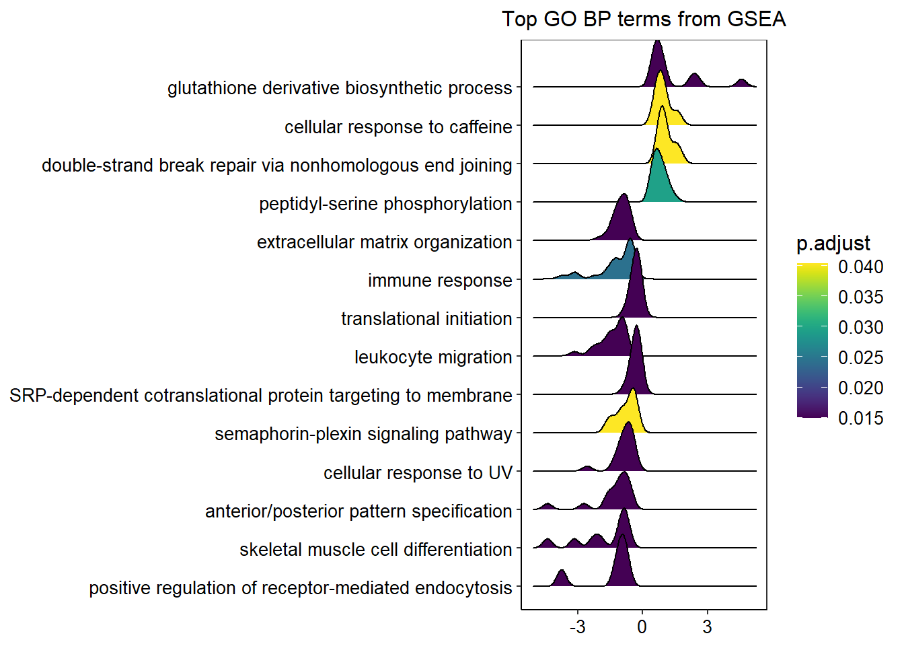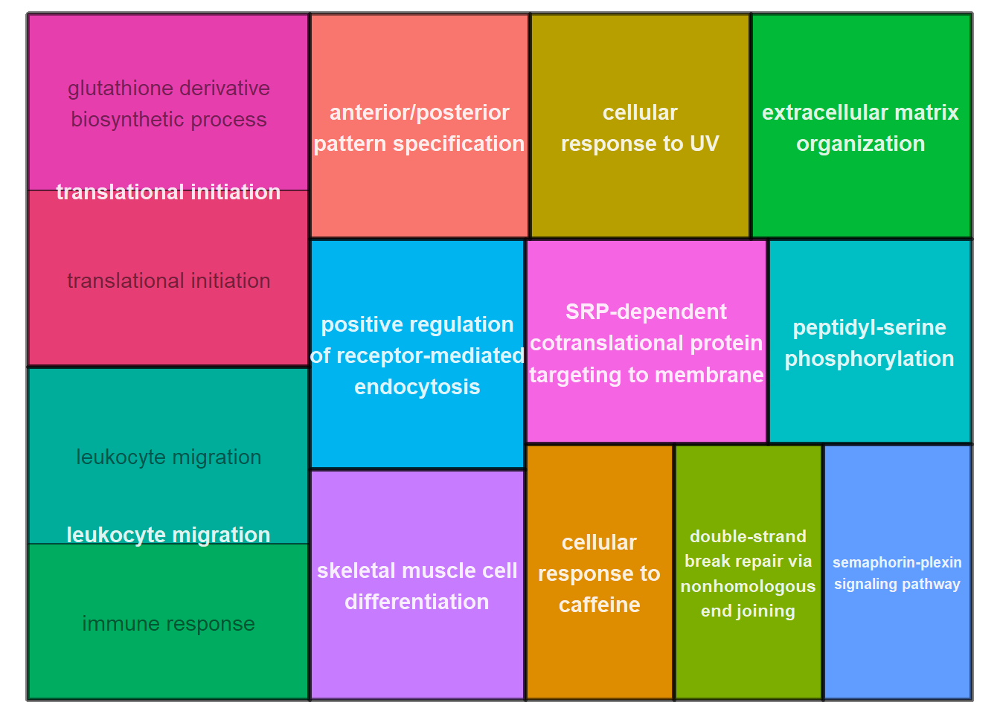
8.3.3 mean T x Status
FALSE
FALSE out of 15151 with nonzero total read count
FALSE adjusted p-value < 0.1
FALSE LFC > 0 (up) : 2, 0.013%
FALSE LFC < 0 (down) : 2, 0.013%
FALSE outliers [1] : 13, 0.086%
FALSE low counts [2] : 0, 0%
FALSE (mean count < 5)
FALSE [1] see 'cooksCutoff' argument of ?results
FALSE [2] see 'independentFiltering' argument of ?results
FALSE null device
FALSE 1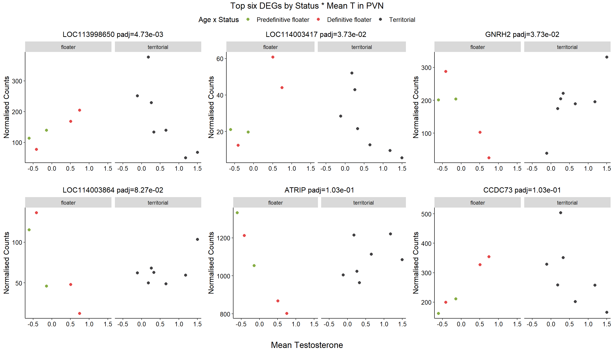
8.4 Strength PVN
8.4.1 Analysis
Formula ~ scale(Strength)
FALSE
FALSE out of 15151 with nonzero total read count
FALSE adjusted p-value < 0.1
FALSE LFC > 0 (up) : 2, 0.013%
FALSE LFC < 0 (down) : 3, 0.02%
FALSE outliers [1] : 29, 0.19%
FALSE low counts [2] : 0, 0%
FALSE (mean count < 5)
FALSE [1] see 'cooksCutoff' argument of ?results
FALSE [2] see 'independentFiltering' argument of ?results
FALSE null device
FALSE 1
8.4.2 Gene Ontology
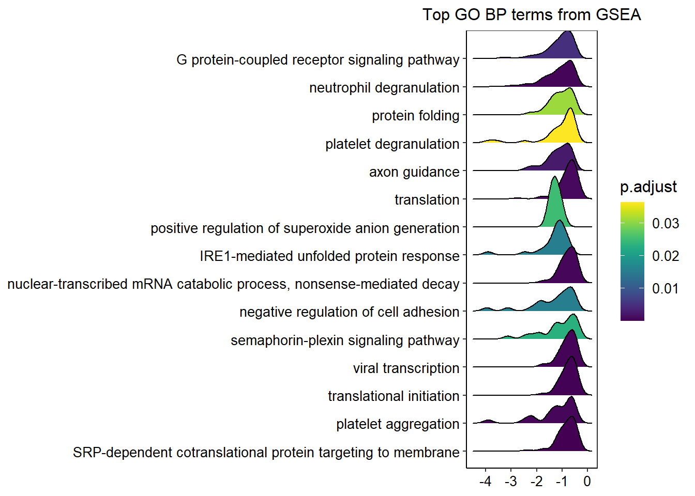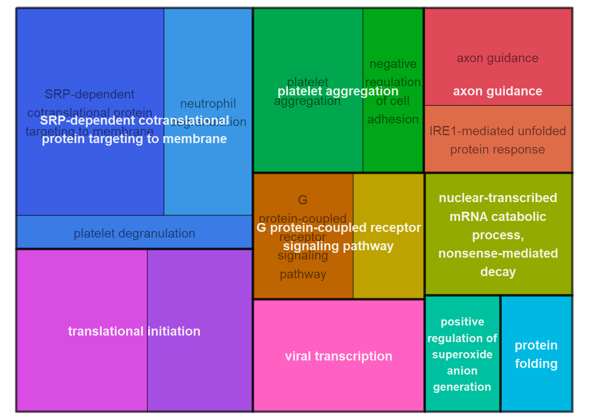
9 Medial Preoptic Area (POM)
9.1 Checking the sampling
For the POM, we started with 16854 genes but after filering we have 15318 genes. Before I go into more detail, I am going to check that the sampling is equal across batches with respect to our variables of interest. With respect to Status we have pom samples for 12, with respect to T and the tracking data.
| pilot | run1 | |
|---|---|---|
| floater | 2 | 5 |
| territorial | 2 | 7 |
| 2015 | 2017 | 2018 | |
|---|---|---|---|
| pilot | 4 | 0 | 0 |
| run1 | 0 | 7 | 5 |
9.1.1 Expression data exploration


FALSE [1] "Batch"
FALSE [1] "Status"
FALSE [1] "Year"
9.1.2 Corrections applied
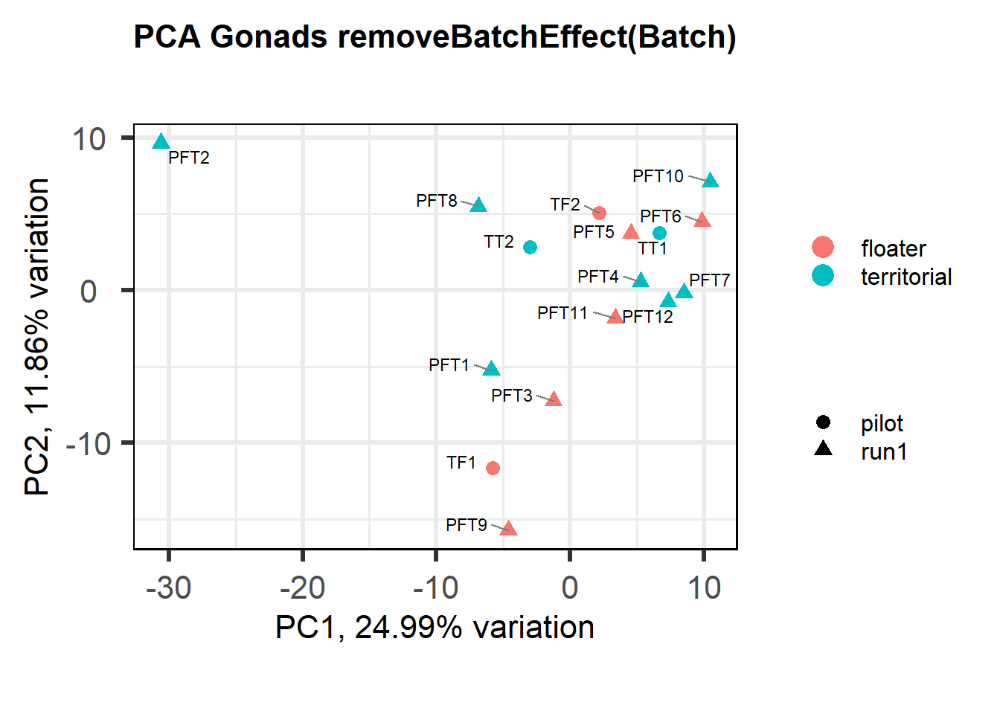
FALSE [1] "Batch"
FALSE [1] "Status"
FALSE [1] "Year"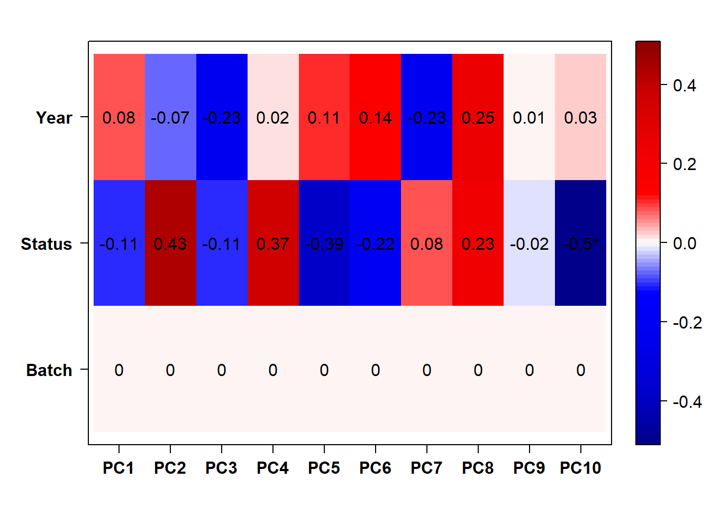
FALSE Flagging genes and samples with too many missing values...
FALSE ..step 1FALSE [1] TRUE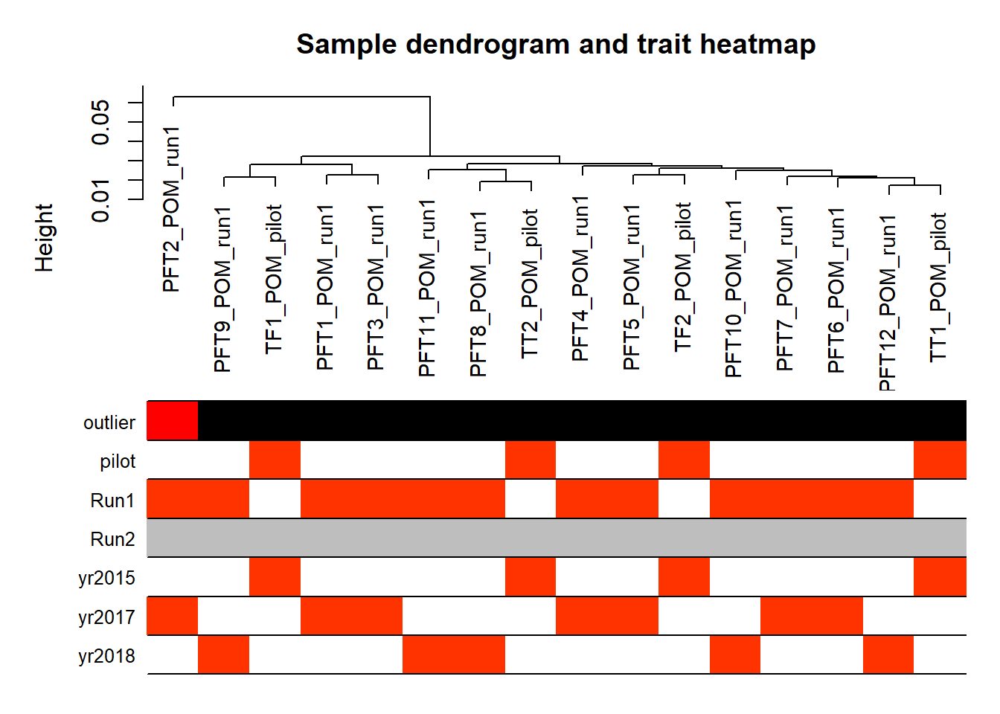
Don’t need to control for year because accounting for Batch seems to fix that.
9.1.3 Outlier removed
PFT2 was previously identified as a potential outlier, and it’s coming out quite separately here, even after all the corrections for batch effects. So, this one I am going to REMOVE.
##Status POM
###Analysis
Formula = ~ Batch + Status
FALSE
FALSE out of 15314 with nonzero total read count
FALSE adjusted p-value < 0.1
FALSE LFC > 0 (up) : 3, 0.02%
FALSE LFC < 0 (down) : 2, 0.013%
FALSE outliers [1] : 16, 0.1%
FALSE low counts [2] : 0, 0%
FALSE (mean count < 5)
FALSE [1] see 'cooksCutoff' argument of ?results
FALSE [2] see 'independentFiltering' argument of ?results
FALSE null device
FALSE 1
9.1.4 Gene Ontology
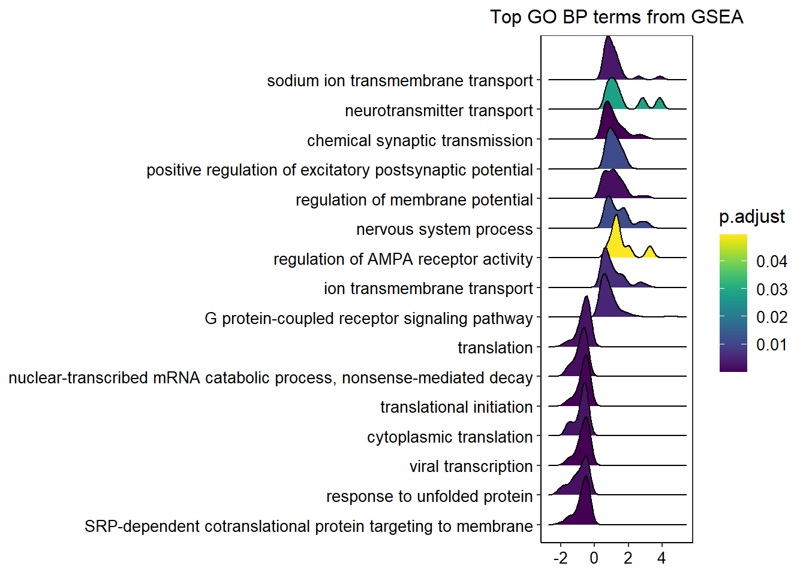
9.2 Testosterone POM
9.2.1 Expression data exploration


FALSE [1] "Status"
FALSE [1] "Year"
9.2.2 Analysis
Formula = ~ mean_T
FALSE
FALSE out of 15268 with nonzero total read count
FALSE adjusted p-value < 0.1
FALSE LFC > 0 (up) : 34, 0.22%
FALSE LFC < 0 (down) : 11, 0.072%
FALSE outliers [1] : 29, 0.19%
FALSE low counts [2] : 0, 0%
FALSE (mean count < 5)
FALSE [1] see 'cooksCutoff' argument of ?results
FALSE [2] see 'independentFiltering' argument of ?results
FALSE null device
FALSE 1
9.2.3 Gene Ontology

| ID | Description | GeneRatio | BgRatio | pvalue | p.adjust | qvalue | geneID | Count |
|---|---|---|---|---|---|---|---|---|
| GO:0042311 | vasodilation | 3/40 | 21/12294 | 0.0000408 | 0.0105951 | 0.007764 | ITGA11/KLF2/NOS1 | 3 |
| GO:0035264 | multicellular organism growth | 3/40 | 66/12294 | 0.0012669 | 0.1544064 | 0.113148 | AR/KLF2/LOC113993027 | 3 |
| GO:0009968 | negative regulation of signal transduction | 2/40 | 34/12294 | 0.0054219 | 0.1544064 | 0.113148 | RGS8/RGS9BP | 2 |
| GO:0006644 | phospholipid metabolic process | 2/40 | 37/12294 | 0.0063973 | 0.1544064 | 0.113148 | PLA2G4A/PLPPR1 | 2 |
| GO:0009749 | response to glucose | 2/40 | 54/12294 | 0.0132758 | 0.1544064 | 0.113148 | LOC113982296/PRLH | 2 |
| GO:0001701 | in utero embryonic development | 3/40 | 159/12294 | 0.0147806 | 0.1544064 | 0.113148 | AR/KLF2/LOC114001232 | 3 |
| GO:0008584 | male gonad development | 2/40 | 70/12294 | 0.0216857 | 0.1544064 | 0.113148 | AR/TESC | 2 |
| GO:0006936 | muscle contraction | 2/40 | 80/12294 | 0.0278046 | 0.1544064 | 0.113148 | ITGA11/NOS1 | 2 |
| GO:0030518 | intracellular steroid hormone receptor signaling pathway | 1/40 | 10/12294 | 0.0320755 | 0.1544064 | 0.113148 | AR | 1 |
| GO:0032026 | response to magnesium ion | 1/40 | 10/12294 | 0.0320755 | 0.1544064 | 0.113148 | TNFRSF11B | 1 |

9.2.4 mean T x Status
FALSE
FALSE out of 15268 with nonzero total read count
FALSE adjusted p-value < 0.1
FALSE LFC > 0 (up) : 20, 0.13%
FALSE LFC < 0 (down) : 10, 0.065%
FALSE outliers [1] : 13, 0.085%
FALSE low counts [2] : 0, 0%
FALSE (mean count < 5)
FALSE [1] see 'cooksCutoff' argument of ?results
FALSE [2] see 'independentFiltering' argument of ?results
FALSE null device
FALSE 1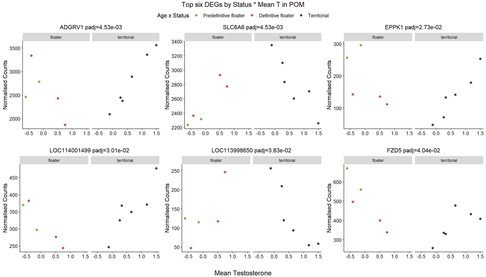
9.3 Strength POM
9.3.1 Analysis
Formula ~ scale(Strength)
FALSE
FALSE out of 15268 with nonzero total read count
FALSE adjusted p-value < 0.1
FALSE LFC > 0 (up) : 5, 0.033%
FALSE LFC < 0 (down) : 10, 0.065%
FALSE outliers [1] : 48, 0.31%
FALSE low counts [2] : 0, 0%
FALSE (mean count < 5)
FALSE [1] see 'cooksCutoff' argument of ?results
FALSE [2] see 'independentFiltering' argument of ?results
FALSE null device
FALSE 1
9.3.2 Gene Ontology
10 Dorsomedial Intercollicular nucleus (ICo)
10.1 Checking the sampling
For the ICO, we started with 16854 genes but after filering we have 15069 genes. Before I go into more detail, I am going to check that the sampling is equal across batches with respect to our variables of interest. With respect to Status we have ico samples for 11, with respect to T and the tracking data.
| pilot | run1 | run2 | |
|---|---|---|---|
| floater | 1 | 1 | 3 |
| territorial | 2 | 5 | 2 |
| 2015 | 2017 | 2018 | |
|---|---|---|---|
| pilot | 3 | 0 | 0 |
| run1 | 0 | 4 | 2 |
| run2 | 0 | 3 | 2 |

10.1.1 Expression data exploration

FALSE [1] "Batch"
FALSE [1] "Status"
FALSE [1] "Year"
10.1.2 Corrections applied
FALSE [1] "Batch"
FALSE [1] "Status"
FALSE [1] "Year"FALSE Flagging genes and samples with too many missing values...
FALSE ..step 1FALSE [1] TRUE10.2 Status ICO
10.2.1 Analysis
Formula = ~ Batch + Status
FALSE
FALSE out of 15069 with nonzero total read count
FALSE adjusted p-value < 0.1
FALSE LFC > 0 (up) : 2, 0.013%
FALSE LFC < 0 (down) : 1, 0.0066%
FALSE outliers [1] : 6, 0.04%
FALSE low counts [2] : 0, 0%
FALSE (mean count < 4)
FALSE [1] see 'cooksCutoff' argument of ?results
FALSE [2] see 'independentFiltering' argument of ?results
FALSE null device
FALSE 1
10.2.2 Gene Ontology
10.3 Testosterone ICO
10.3.1 Expression data exploration

FALSE [1] "Batch"
FALSE [1] "Status"
FALSE [1] "Year"
FALSE Flagging genes and samples with too many missing values...
FALSE ..step 1FALSE [1] TRUE
10.3.2 Corrections applied
FALSE [1] "Batch"
FALSE [1] "Status"
FALSE [1] "Year"Still need to control for Year here…
10.3.3 Analysis
Formula = ~ Batch + Year + mean_T
FALSE
FALSE out of 14968 with nonzero total read count
FALSE adjusted p-value < 0.1
FALSE LFC > 0 (up) : 121, 0.81%
FALSE LFC < 0 (down) : 40, 0.27%
FALSE outliers [1] : 16, 0.11%
FALSE low counts [2] : 0, 0%
FALSE (mean count < 5)
FALSE [1] see 'cooksCutoff' argument of ?results
FALSE [2] see 'independentFiltering' argument of ?results
FALSE null device
FALSE 1
10.3.4 Gene Ontology
| ID | Description | GeneRatio | BgRatio | pvalue | p.adjust | qvalue | geneID | Count |
|---|---|---|---|---|---|---|---|---|
| GO:0003341 | cilium movement | 8/114 | 38/12146 | 0.0000000 | 0.0000010 | 0.0000009 | CFAP70/DNAH1/DNAH9/DNAI1/DNAI2/LOC113981955/LOC113998190/LOC114000425 | 8 |
| GO:0007018 | microtubule-based movement | 8/114 | 68/12146 | 0.0000002 | 0.0000590 | 0.0000556 | DNAH1/DNAH3/DNAH9/DNAI1/DNAI2/KIF24/LOC113998190/LOC114000425 | 8 |
| GO:0060285 | cilium-dependent cell motility | 4/114 | 14/12146 | 0.0000069 | 0.0012381 | 0.0011686 | CFAP44/DNAH1/DNAH3/LOC113984044 | 4 |
| GO:0060271 | cilium assembly | 9/114 | 180/12146 | 0.0000481 | 0.0065205 | 0.0061545 | CEP126/CFAP44/CFAP54/CFAP70/DNAI2/GSN/KIF24/LOC113982241/LOC113998190 | 9 |
| GO:0007368 | determination of left/right symmetry | 5/114 | 50/12146 | 0.0001009 | 0.0109382 | 0.0103242 | DNAI1/DNAI2/LOC113984044/LOC113998190/ZIC3 | 5 |
| GO:1904707 | positive regulation of vascular associated smooth muscle cell proliferation | 4/114 | 34/12146 | 0.0002747 | 0.0238414 | 0.0225033 | ADAMTS1/HPGD/LOC113991532/MMP2 | 4 |
| GO:0030317 | flagellated sperm motility | 4/114 | 35/12146 | 0.0003079 | 0.0238414 | 0.0225033 | CFAP65/DNAH1/DNAI1/LOC113998190 | 4 |
| GO:0036158 | outer dynein arm assembly | 3/114 | 18/12146 | 0.0005929 | 0.0401715 | 0.0379168 | DNAI1/DNAI2/LOC113998190 | 3 |
| GO:0007288 | sperm axoneme assembly | 3/114 | 20/12146 | 0.0008171 | 0.0492087 | 0.0464468 | CFAP44/CFAP65/DNAH1 | 3 |
| GO:0030030 | cell projection organization | 3/114 | 34/12146 | 0.0038989 | 0.2113210 | 0.1994601 | CCDC78/DNAH9/LOC114000425 | 3 |
10.3.5 mean T x Status
FALSE
FALSE out of 14968 with nonzero total read count
FALSE adjusted p-value < 0.1
FALSE LFC > 0 (up) : 28, 0.19%
FALSE LFC < 0 (down) : 47, 0.31%
FALSE outliers [1] : 15, 0.1%
FALSE low counts [2] : 0, 0%
FALSE (mean count < 5)
FALSE [1] see 'cooksCutoff' argument of ?results
FALSE [2] see 'independentFiltering' argument of ?results
FALSE null device
FALSE 110.4 Strength ICO
10.4.1 Analysis
Formula ~ Batch + Year + scale(Strength)
FALSE
FALSE out of 14968 with nonzero total read count
FALSE adjusted p-value < 0.1
FALSE LFC > 0 (up) : 39, 0.26%
FALSE LFC < 0 (down) : 29, 0.19%
FALSE outliers [1] : 11, 0.073%
FALSE low counts [2] : 0, 0%
FALSE (mean count < 5)
FALSE [1] see 'cooksCutoff' argument of ?results
FALSE [2] see 'independentFiltering' argument of ?results
FALSE null device
FALSE 1
10.4.2 Gene Ontology
11 Midbrain Central Grey (GCt)
11.1 Checking the sampling
For the GCT, we started with 16854 genes but after filering we have 15099 genes. Before I go into more detail, I am going to check that the sampling is equal across batches with respect to our variables of interest. With respect to Status we have gct samples for 12, with respect to T and the tracking data.
| pilot | run1 | run2 | |
|---|---|---|---|
| floater | 1 | 3 | 2 |
| territorial | 0 | 5 | 2 |
| 2015 | 2017 | 2018 | |
|---|---|---|---|
| pilot | 1 | 0 | 0 |
| run1 | 0 | 4 | 4 |
| run2 | 0 | 3 | 1 |

given there is only 1 GCT sample from the pilot, I will just exclude the pilot data.
11.1.1 Expression data exploration

FALSE [1] "Batch"
FALSE [1] "Status"
FALSE [1] "Year"
11.1.2 Corrections applied
FALSE [1] "Batch"
FALSE [1] "Status"
FALSE [1] "Year"FALSE Flagging genes and samples with too many missing values...
FALSE ..step 1FALSE [1] TRUE11.2 Status GCT
11.2.1 Analysis
Formula = ~ Batch + Status
FALSE
FALSE out of 15099 with nonzero total read count
FALSE adjusted p-value < 0.1
FALSE LFC > 0 (up) : 17, 0.11%
FALSE LFC < 0 (down) : 12, 0.079%
FALSE outliers [1] : 14, 0.093%
FALSE low counts [2] : 0, 0%
FALSE (mean count < 5)
FALSE [1] see 'cooksCutoff' argument of ?results
FALSE [2] see 'independentFiltering' argument of ?results
FALSE null device
FALSE 1
11.2.2 Gene Ontology
11.3 Testosterone GCT
11.4 Expression data exploration


FALSE [1] "Batch"
FALSE [1] "Status"
FALSE [1] "Year"

FALSE null device
FALSE 111.4.1 Analysis
Formula = ~ Batch + mean_T
FALSE
FALSE out of 15105 with nonzero total read count
FALSE adjusted p-value < 0.1
FALSE LFC > 0 (up) : 4, 0.026%
FALSE LFC < 0 (down) : 13, 0.086%
FALSE outliers [1] : 33, 0.22%
FALSE low counts [2] : 0, 0%
FALSE (mean count < 5)
FALSE [1] see 'cooksCutoff' argument of ?results
FALSE [2] see 'independentFiltering' argument of ?results
FALSE null device
FALSE 1
11.4.2 Gene Ontology

11.4.3 mean T x Status
FALSE
FALSE out of 15105 with nonzero total read count
FALSE adjusted p-value < 0.1
FALSE LFC > 0 (up) : 216, 1.4%
FALSE LFC < 0 (down) : 203, 1.3%
FALSE outliers [1] : 23, 0.15%
FALSE low counts [2] : 874, 5.8%
FALSE (mean count < 11)
FALSE [1] see 'cooksCutoff' argument of ?results
FALSE [2] see 'independentFiltering' argument of ?results
FALSE null device
FALSE 111.5 Strength GCT
11.5.1 Analysis
Formula ~ Batch + scale(Strength)
FALSE
FALSE out of 15105 with nonzero total read count
FALSE adjusted p-value < 0.1
FALSE LFC > 0 (up) : 34, 0.23%
FALSE LFC < 0 (down) : 29, 0.19%
FALSE outliers [1] : 41, 0.27%
FALSE low counts [2] : 0, 0%
FALSE (mean count < 5)
FALSE [1] see 'cooksCutoff' argument of ?results
FALSE [2] see 'independentFiltering' argument of ?results
FALSE null device
FALSE 1
11.5.2 Gene Ontology
12 Nucleus Taenia (TnA)
12.1 Checking the sampling
For the TNA, we started with 16854 genes but after filering we have 14693 genes. Before I go into more detail, I am going to check that the sampling is equal across batches with respect to our variables of interest. With respect to Status we have tna samples for 12, with respect to T and the tracking data.
| pilot | run1 | run2 | |
|---|---|---|---|
| floater | 2 | 4 | 1 |
| territorial | 2 | 5 | 2 |
| 2015 | 2017 | 2018 | |
|---|---|---|---|
| pilot | 4 | 0 | 0 |
| run1 | 0 | 6 | 3 |
| run2 | 0 | 1 | 2 |

12.1.1 Expression data exploration


FALSE [1] "Batch"
FALSE [1] "Status"
FALSE [1] "Year"
12.1.2 Corrections applied
FALSE [1] "Batch"
FALSE [1] "Status"
FALSE [1] "Year"FALSE Flagging genes and samples with too many missing values...
FALSE ..step 1FALSE [1] TRUEPFT1 was previously identified as an outlier based on WGCNA dendrograms only. But here it’s not consistently dentified as an outlier.Also previous analysis shows that it doesn’t have a strong influence on the results, so I am going to keep it in this data. Looks like we only need to control for Batch, as it removes the effects of year on our data.
12.2 Status TNA
12.2.1 Analysis
Formula = ~ Batch + Status
FALSE
FALSE out of 14693 with nonzero total read count
FALSE adjusted p-value < 0.1
FALSE LFC > 0 (up) : 5, 0.034%
FALSE LFC < 0 (down) : 8, 0.054%
FALSE outliers [1] : 24, 0.16%
FALSE low counts [2] : 1415, 9.6%
FALSE (mean count < 17)
FALSE [1] see 'cooksCutoff' argument of ?results
FALSE [2] see 'independentFiltering' argument of ?results
FALSE null device
FALSE 1
12.2.2 Gene Ontology
12.3 Testosterone TNA
12.3.1 Expression data exploration

FALSE [1] "Batch"
FALSE [1] "Status"
FALSE [1] "Year"
12.3.2 Corrections applied

FALSE [1] "Batch"
FALSE [1] "Status"
FALSE [1] "Year"FALSE Flagging genes and samples with too many missing values...
FALSE ..step 1FALSE [1] TRUETaking the batch effect into account seems to remove the association with Year too. Only need to include Batch in the model.
12.3.3 Analysis
Formula = ~ Batch + mean_T
FALSE
FALSE out of 14614 with nonzero total read count
FALSE adjusted p-value < 0.1
FALSE LFC > 0 (up) : 99, 0.68%
FALSE LFC < 0 (down) : 143, 0.98%
FALSE outliers [1] : 37, 0.25%
FALSE low counts [2] : 280, 1.9%
FALSE (mean count < 6)
FALSE [1] see 'cooksCutoff' argument of ?results
FALSE [2] see 'independentFiltering' argument of ?results
FALSE null device
FALSE 1
12.3.4 Gene Ontology
| ID | Description | GeneRatio | BgRatio | pvalue | p.adjust | qvalue | geneID | Count |
|---|---|---|---|---|---|---|---|---|
| GO:0007613 | memory | 7/210 | 73/11903 | 0.0002925 | 0.1888650 | 0.1803886 | CEBPB/FGF13/LGMN/LOC113991532/PPP1R1B/PTN/SLC24A2 | 7 |
| GO:0061098 | positive regulation of protein tyrosine kinase activity | 5/210 | 37/11903 | 0.0004486 | 0.1888650 | 0.1803886 | ABI1/AFAP1L2/DLG3/EPHA4/LOC113988363 | 5 |
| GO:0017158 | regulation of calcium ion-dependent exocytosis | 3/210 | 13/11903 | 0.0013587 | 0.2874335 | 0.2745333 | SYT12/SYT7/SYT9 | 3 |
| GO:0034614 | cellular response to reactive oxygen species | 4/210 | 29/11903 | 0.0015821 | 0.2874335 | 0.2745333 | AGAP3/JUN/LOC114000703/MMP9 | 4 |
| GO:0030048 | actin filament-based movement | 3/210 | 14/11903 | 0.0017068 | 0.2874335 | 0.2745333 | MYH9/WASL/WIPF3 | 3 |
| GO:0001836 | release of cytochrome c from mitochondria | 3/210 | 15/11903 | 0.0021060 | 0.2955393 | 0.2822753 | DNM1L/JUN/LOC114000703 | 3 |
| GO:1904707 | positive regulation of vascular associated smooth muscle cell proliferation | 4/210 | 34/11903 | 0.0028840 | 0.3052112 | 0.2915131 | JUN/LOC113991532/LOC114000703/MMP9 | 4 |
| GO:0060291 | long-term synaptic potentiation | 4/210 | 35/11903 | 0.0032118 | 0.3052112 | 0.2915131 | CRHR2/PTN/SLC24A2/SYT12 | 4 |
| GO:0007612 | learning | 5/210 | 61/11903 | 0.0043519 | 0.3052112 | 0.2915131 | FGF13/JUN/LOC114000703/PTN/SLC24A2 | 5 |
| GO:0007052 | mitotic spindle organization | 4/210 | 39/11903 | 0.0047763 | 0.3052112 | 0.2915131 | MAP4/RMDN1/SPC25/STMN1 | 4 |

12.3.5 mean T x Status
FALSE
FALSE out of 14614 with nonzero total read count
FALSE adjusted p-value < 0.1
FALSE LFC > 0 (up) : 33, 0.23%
FALSE LFC < 0 (down) : 14, 0.096%
FALSE outliers [1] : 22, 0.15%
FALSE low counts [2] : 3099, 21%
FALSE (mean count < 58)
FALSE [1] see 'cooksCutoff' argument of ?results
FALSE [2] see 'independentFiltering' argument of ?results
FALSE null device
FALSE 112.4 Strength TNA
12.4.1 Analysis
Formula ~ Batch + scale(Strength)
FALSE
FALSE out of 14614 with nonzero total read count
FALSE adjusted p-value < 0.1
FALSE LFC > 0 (up) : 22, 0.15%
FALSE LFC < 0 (down) : 34, 0.23%
FALSE outliers [1] : 38, 0.26%
FALSE low counts [2] : 839, 5.7%
FALSE (mean count < 11)
FALSE [1] see 'cooksCutoff' argument of ?results
FALSE [2] see 'independentFiltering' argument of ?results
FALSE null device
FALSE 1
12.4.2 Gene Ontology
There are no enriched terms here.
13 Arcopallium intermedium (Ai)
13.1 Checking the sampling
For the AI, we started with 16854 genes but after filering we have 14598 genes. Before I go into more detail, I am going to check that the sampling is equal across batches with respect to our variables of interest. With respect to Status we have ai samples for 11, with respect to T and the tracking data.
| pilot | run1 | |
|---|---|---|
| floater | 2 | 4 |
| territorial | 1 | 7 |
| 2015 | 2017 | 2018 | |
|---|---|---|---|
| pilot | 3 | 0 | 0 |
| run1 | 0 | 6 | 5 |
13.1.1 Expression data exploration

FALSE [1] "Batch"
FALSE [1] "Status"
FALSE [1] "Year"

FALSE null device
FALSE 113.1.2 Corrections applied
FALSE [1] "Batch"
FALSE [1] "Status"
FALSE [1] "Year"FALSE Flagging genes and samples with too many missing values...
FALSE ..step 1FALSE [1] TRUERemoving the batch effect effectively controls for Year.
13.2 Status AI
13.2.1 Analysis
Formula = ~ Batch + Status
FALSE
FALSE out of 14598 with nonzero total read count
FALSE adjusted p-value < 0.1
FALSE LFC > 0 (up) : 11, 0.075%
FALSE LFC < 0 (down) : 7, 0.048%
FALSE outliers [1] : 10, 0.069%
FALSE low counts [2] : 0, 0%
FALSE (mean count < 1)
FALSE [1] see 'cooksCutoff' argument of ?results
FALSE [2] see 'independentFiltering' argument of ?results
FALSE null device
FALSE 1
13.2.2 Gene Ontology
13.3 Testosterone AI
13.3.1 Expression data exploration

FALSE [1] "Status"
FALSE [1] "Year"
FALSE Flagging genes and samples with too many missing values...
FALSE ..step 1FALSE [1] TRUE
No association with year.
13.3.2 Analysis
Formula = ~ mean_T
FALSE
FALSE out of 14628 with nonzero total read count
FALSE adjusted p-value < 0.1
FALSE LFC > 0 (up) : 13, 0.089%
FALSE LFC < 0 (down) : 30, 0.21%
FALSE outliers [1] : 25, 0.17%
FALSE low counts [2] : 0, 0%
FALSE (mean count < 5)
FALSE [1] see 'cooksCutoff' argument of ?results
FALSE [2] see 'independentFiltering' argument of ?results
FALSE null device
FALSE 1
13.3.3 Gene Ontology
13.3.4 mean T x Status
FALSE
FALSE out of 14628 with nonzero total read count
FALSE adjusted p-value < 0.1
FALSE LFC > 0 (up) : 4, 0.027%
FALSE LFC < 0 (down) : 4, 0.027%
FALSE outliers [1] : 493, 3.4%
FALSE low counts [2] : 0, 0%
FALSE (mean count < 5)
FALSE [1] see 'cooksCutoff' argument of ?results
FALSE [2] see 'independentFiltering' argument of ?results
FALSE null device
FALSE 1
13.4 Strength AI
13.4.1 Analysis
Formula ~ scale(Strength)
FALSE
FALSE out of 14628 with nonzero total read count
FALSE adjusted p-value < 0.1
FALSE LFC > 0 (up) : 18, 0.12%
FALSE LFC < 0 (down) : 16, 0.11%
FALSE outliers [1] : 21, 0.14%
FALSE low counts [2] : 0, 0%
FALSE (mean count < 5)
FALSE [1] see 'cooksCutoff' argument of ?results
FALSE [2] see 'independentFiltering' argument of ?results
FALSE null device
FALSE 1
13.4.2 Gene Ontology
14 Lateral Septum (Ls)
14.1 Checking the sampling
For the LS, we started with 16854 genes but after filering we have 14899 genes. Before I go into more detail, I am going to check that the sampling is equal across batches with respect to our variables of interest. With respect to Status we have ls samples for 12, with respect to T and the tracking data.
| pilot | run2 | |
|---|---|---|
| floater | 1 | 5 |
| territorial | 2 | 7 |
| 2015 | 2017 | 2018 | |
|---|---|---|---|
| pilot | 3 | 0 | 0 |
| run2 | 0 | 7 | 5 |
14.1.1 Expression data exploration

FALSE [1] "Batch"
FALSE [1] "Status"
FALSE [1] "Year"
14.1.2 Corrections applied
FALSE [1] "Batch"
FALSE [1] "Status"
FALSE [1] "Year"FALSE Flagging genes and samples with too many missing values...
FALSE ..step 1FALSE [1] TRUEPFT2 was previously identified as an outlier, but using the quantitative threshold and controlling for batch it doesn’t come out as different. Controlling for Batch adequately controls for Year.
14.2 Status LS
14.2.1 Analysis
Formula = ~ Batch + Status
FALSE
FALSE out of 14899 with nonzero total read count
FALSE adjusted p-value < 0.1
FALSE LFC > 0 (up) : 2, 0.013%
FALSE LFC < 0 (down) : 3, 0.02%
FALSE outliers [1] : 16, 0.11%
FALSE low counts [2] : 0, 0%
FALSE (mean count < 1)
FALSE [1] see 'cooksCutoff' argument of ?results
FALSE [2] see 'independentFiltering' argument of ?results
FALSE null device
FALSE 1
14.2.2 Gene Ontology
14.3 Testosterone LS
14.3.1 Expression data exploration

FALSE [1] "Status"
FALSE [1] "Year"
FALSE Flagging genes and samples with too many missing values...
FALSE ..step 1FALSE [1] TRUE
14.3.2 Analysis
Formula = ~ mean_T
FALSE
FALSE out of 14818 with nonzero total read count
FALSE adjusted p-value < 0.1
FALSE LFC > 0 (up) : 0, 0%
FALSE LFC < 0 (down) : 2, 0.013%
FALSE outliers [1] : 62, 0.42%
FALSE low counts [2] : 0, 0%
FALSE (mean count < 4)
FALSE [1] see 'cooksCutoff' argument of ?results
FALSE [2] see 'independentFiltering' argument of ?results
FALSE null device
FALSE 1
14.3.3 Gene Ontology
14.3.4 mean T x Status
FALSE
FALSE out of 14818 with nonzero total read count
FALSE adjusted p-value < 0.1
FALSE LFC > 0 (up) : 14, 0.094%
FALSE LFC < 0 (down) : 25, 0.17%
FALSE outliers [1] : 29, 0.2%
FALSE low counts [2] : 572, 3.9%
FALSE (mean count < 8)
FALSE [1] see 'cooksCutoff' argument of ?results
FALSE [2] see 'independentFiltering' argument of ?results
FALSE null device
FALSE 114.4 Strength LS
14.4.1 Analysis
Formula ~ scale(Strength)
FALSE
FALSE out of 14818 with nonzero total read count
FALSE adjusted p-value < 0.1
FALSE LFC > 0 (up) : 17, 0.11%
FALSE LFC < 0 (down) : 81, 0.55%
FALSE outliers [1] : 53, 0.36%
FALSE low counts [2] : 6849, 46%
FALSE (mean count < 303)
FALSE [1] see 'cooksCutoff' argument of ?results
FALSE [2] see 'independentFiltering' argument of ?results
FALSE null device
FALSE 1
14.4.2 Gene Ontology
| ID | Description | GeneRatio | BgRatio | pvalue | p.adjust | qvalue | geneID | Count |
|---|---|---|---|---|---|---|---|---|
| GO:0048538 | thymus development | 3/83 | 32/12010 | 0.0013661 | 0.2756505 | 0.2636709 | LMO4/PSEN1/ZMPSTE24 | 3 |
| GO:0000244 | spliceosomal tri-snRNP complex assembly | 2/83 | 10/12010 | 0.0020484 | 0.2756505 | 0.2636709 | PRPF8/SART3 | 2 |
| GO:0050927 | positive regulation of positive chemotaxis | 2/83 | 11/12010 | 0.0024924 | 0.2756505 | 0.2636709 | S1PR1/VEGFA | 2 |
| GO:0048593 | camera-type eye morphogenesis | 2/83 | 13/12010 | 0.0035032 | 0.2756505 | 0.2636709 | SHROOM2/VEGFA | 2 |
| GO:0030500 | regulation of bone mineralization | 2/83 | 14/12010 | 0.0040687 | 0.2756505 | 0.2636709 | S1PR1/ZMPSTE24 | 2 |
| GO:2000009 | negative regulation of protein localization to cell surface | 2/83 | 14/12010 | 0.0040687 | 0.2756505 | 0.2636709 | GPM6B/LEPROT | 2 |
| GO:0007193 | adenylate cyclase-inhibiting G protein-coupled receptor signaling pathway | 3/83 | 49/12010 | 0.0046643 | 0.2756505 | 0.2636709 | LOC113992576/NPY1R/S1PR1 | 3 |
| GO:0090557 | establishment of endothelial intestinal barrier | 2/83 | 15/12010 | 0.0046737 | 0.2756505 | 0.2636709 | RAB1A/RAP2C | 2 |
| GO:0031532 | actin cytoskeleton reorganization | 3/83 | 55/12010 | 0.0064477 | 0.2756505 | 0.2636709 | LOC113988212/RALA/S1PR1 | 3 |
| GO:0032402 | melanosome transport | 2/83 | 18/12010 | 0.0067194 | 0.2756505 | 0.2636709 | BLOC1S5/RAB1A | 2 |
15 Bed Nucleus of the Stria Terminalis (BSTm)
15.1 Checking the sampling
For the BSTm, we started with 16854 genes but after filering we have 15031 genes. Before I go into more detail, I am going to check that the sampling is equal across batches with respect to our variables of interest. With respect to Status we have bstm samples for 12, with respect to T and the tracking data.
| pilot | run2 | |
|---|---|---|
| floater | 2 | 5 |
| territorial | 2 | 7 |
| 2015 | 2017 | 2018 | |
|---|---|---|---|
| pilot | 4 | 0 | 0 |
| run2 | 0 | 7 | 5 |
15.1.1 Expression data exploration

FALSE [1] "Batch"
FALSE [1] "Status"
FALSE [1] "Year"
15.1.2 Corrections applied
FALSE [1] "Batch"
FALSE [1] "Status"
FALSE [1] "Year"FALSE Flagging genes and samples with too many missing values...
FALSE ..step 1FALSE [1] TRUEBatch controls effectively for Year.
15.2 Status BSTm
15.2.1 Analysis
Formula = ~ Batch + Status
FALSE
FALSE out of 15031 with nonzero total read count
FALSE adjusted p-value < 0.1
FALSE LFC > 0 (up) : 6, 0.04%
FALSE LFC < 0 (down) : 3, 0.02%
FALSE outliers [1] : 5, 0.033%
FALSE low counts [2] : 0, 0%
FALSE (mean count < 5)
FALSE [1] see 'cooksCutoff' argument of ?results
FALSE [2] see 'independentFiltering' argument of ?results
FALSE null device
FALSE 1
15.2.2 Gene Ontology
15.3 Testosterone BSTm
15.3.1 Expression data exploration

FALSE [1] "Status"
FALSE [1] "Year"
FALSE Flagging genes and samples with too many missing values...
FALSE ..step 1FALSE [1] TRUE
15.3.2 Analysis
Formula = ~ mean_T
FALSE
FALSE out of 15010 with nonzero total read count
FALSE adjusted p-value < 0.1
FALSE LFC > 0 (up) : 0, 0%
FALSE LFC < 0 (down) : 3, 0.02%
FALSE outliers [1] : 32, 0.21%
FALSE low counts [2] : 0, 0%
FALSE (mean count < 5)
FALSE [1] see 'cooksCutoff' argument of ?results
FALSE [2] see 'independentFiltering' argument of ?results
FALSE null device
FALSE 1
15.3.3 Gene Ontology
15.3.4 mean T x Status
FALSE
FALSE out of 15010 with nonzero total read count
FALSE adjusted p-value < 0.1
FALSE LFC > 0 (up) : 3, 0.02%
FALSE LFC < 0 (down) : 2, 0.013%
FALSE outliers [1] : 11, 0.073%
FALSE low counts [2] : 0, 0%
FALSE (mean count < 5)
FALSE [1] see 'cooksCutoff' argument of ?results
FALSE [2] see 'independentFiltering' argument of ?results
FALSE null device
FALSE 115.4 Strength BSTm
15.4.1 Analysis
Formula ~ scale(Strength)
FALSE
FALSE out of 15010 with nonzero total read count
FALSE adjusted p-value < 0.1
FALSE LFC > 0 (up) : 8, 0.053%
FALSE LFC < 0 (down) : 7, 0.047%
FALSE outliers [1] : 26, 0.17%
FALSE low counts [2] : 870, 5.8%
FALSE (mean count < 11)
FALSE [1] see 'cooksCutoff' argument of ?results
FALSE [2] see 'independentFiltering' argument of ?results
FALSE null device
FALSE 1
15.4.2 Gene Ontology
Volcano plots and similarity of gene expression between tissues is in another Rmarkdown on this site.
FALSE R version 4.0.2 (2020-06-22)
FALSE Platform: x86_64-w64-mingw32/x64 (64-bit)
FALSE Running under: Windows 10 x64 (build 19044)
FALSE
FALSE Matrix products: default
FALSE
FALSE locale:
FALSE [1] LC_COLLATE=English_Australia.1252 LC_CTYPE=English_Australia.1252
FALSE [3] LC_MONETARY=English_Australia.1252 LC_NUMERIC=C
FALSE [5] LC_TIME=English_Australia.1252
FALSE
FALSE attached base packages:
FALSE [1] grid parallel stats4 stats graphics grDevices utils
FALSE [8] datasets methods base
FALSE
FALSE other attached packages:
FALSE [1] nlme_3.1-148 GGally_2.1.0
FALSE [3] viridis_0.6.1 viridisLite_0.4.0
FALSE [5] rrvgo_1.0.2 UpSetR_1.4.0
FALSE [7] limma_3.44.3 flashClust_1.01-2
FALSE [9] org.Hs.eg.db_3.11.4 AnnotationDbi_1.50.0
FALSE [11] clusterProfiler_3.16.1 WGCNA_1.69
FALSE [13] fastcluster_1.1.25 dynamicTreeCut_1.63-1
FALSE [15] wesanderson_0.3.6 VennDiagram_1.6.20
FALSE [17] futile.logger_1.4.3 kableExtra_1.3.1
FALSE [19] DESeq2_1.28.1 SummarizedExperiment_1.18.1
FALSE [21] DelayedArray_0.14.0 matrixStats_0.56.0
FALSE [23] Biobase_2.48.0 GenomicRanges_1.40.0
FALSE [25] GenomeInfoDb_1.24.0 IRanges_2.22.2
FALSE [27] S4Vectors_0.26.1 BiocGenerics_0.34.0
FALSE [29] lubridate_1.8.0 stringr_1.4.0
FALSE [31] fdrtool_1.2.15 PCAtools_2.0.0
FALSE [33] cowplot_1.0.0 lattice_0.20-41
FALSE [35] ggrepel_0.8.2 ggpubr_0.4.0
FALSE [37] gridExtra_2.3 ggplot2_3.3.5
FALSE [39] reshape2_1.4.4 plyr_1.8.6
FALSE
FALSE loaded via a namespace (and not attached):
FALSE [1] ragg_1.2.1 tidyr_1.1.4
FALSE [3] acepack_1.4.1 bit64_0.9-7
FALSE [5] knitr_1.29 irlba_2.3.3
FALSE [7] data.table_1.13.0 rpart_4.1-15
FALSE [9] RCurl_1.98-1.2 doParallel_1.0.15
FALSE [11] generics_0.0.2 snow_0.4-3
FALSE [13] preprocessCore_1.50.0 lambda.r_1.2.4
FALSE [15] RSQLite_2.2.0 europepmc_0.4
FALSE [17] bit_4.0.4 enrichplot_1.8.1
FALSE [19] webshot_0.5.2 xml2_1.3.2
FALSE [21] httpuv_1.5.4 assertthat_0.2.1
FALSE [23] xfun_0.29 hms_1.1.1
FALSE [25] jquerylib_0.1.4 evaluate_0.14
FALSE [27] promises_1.1.1 fansi_0.4.1
FALSE [29] progress_1.2.2 readxl_1.3.1
FALSE [31] igraph_1.2.6 DBI_1.1.0
FALSE [33] geneplotter_1.66.0 htmlwidgets_1.5.3
FALSE [35] reshape_0.8.8 purrr_0.3.4
FALSE [37] ellipsis_0.3.2 dplyr_1.0.7
FALSE [39] backports_1.1.7 annotate_1.66.0
FALSE [41] gridBase_0.4-7 vctrs_0.3.8
FALSE [43] abind_1.4-5 withr_2.4.3
FALSE [45] ggforce_0.3.2 triebeard_0.3.0
FALSE [47] treemap_2.4-2 checkmate_2.0.0
FALSE [49] prettyunits_1.1.1 cluster_2.1.0
FALSE [51] DOSE_3.14.0 crayon_1.4.2
FALSE [53] genefilter_1.70.0 pkgconfig_2.0.3
FALSE [55] slam_0.1-47 labeling_0.3
FALSE [57] tweenr_1.0.1 wordcloud_2.6
FALSE [59] nnet_7.3-14 rlang_0.4.12
FALSE [61] lifecycle_1.0.1 downloader_0.4
FALSE [63] rsvd_1.0.3 cellranger_1.1.0
FALSE [65] polyclip_1.10-0 Matrix_1.2-18
FALSE [67] urltools_1.7.3 carData_3.0-4
FALSE [69] base64enc_0.1-3 ggridges_0.5.3
FALSE [71] pheatmap_1.0.12 png_0.1-7
FALSE [73] bitops_1.0-6 blob_1.2.1
FALSE [75] DelayedMatrixStats_1.10.0 qvalue_2.20.0
FALSE [77] jpeg_0.1-8.1 rstatix_0.6.0
FALSE [79] gridGraphics_0.5-1 ggsignif_0.6.0
FALSE [81] scales_1.1.1 memoise_1.1.0
FALSE [83] magrittr_2.0.1 zlibbioc_1.34.0
FALSE [85] compiler_4.0.2 scatterpie_0.1.5
FALSE [87] dqrng_0.2.1 RColorBrewer_1.1-2
FALSE [89] XVector_0.28.0 htmlTable_2.0.1
FALSE [91] formatR_1.8 Formula_1.2-3
FALSE [93] MASS_7.3-51.6 tidyselect_1.1.0
FALSE [95] stringi_1.4.6 forcats_0.5.1
FALSE [97] textshaping_0.3.6 highr_0.8
FALSE [99] yaml_2.2.1 GOSemSim_2.14.2
FALSE [101] BiocSingular_1.4.0 locfit_1.5-9.4
FALSE [103] latticeExtra_0.6-29 fastmatch_1.1-0
FALSE [105] tools_4.0.2 rio_0.5.16
FALSE [107] rstudioapi_0.13 foreach_1.5.0
FALSE [109] foreign_0.8-80 farver_2.0.3
FALSE [111] ggraph_2.0.5 digest_0.6.25
FALSE [113] rvcheck_0.1.8 BiocManager_1.30.10
FALSE [115] shiny_1.5.0 Rcpp_1.0.7
FALSE [117] car_3.0-8 broom_0.7.10
FALSE [119] later_1.1.0.1 httr_1.4.2
FALSE [121] colorspace_1.4-1 rvest_1.0.2
FALSE [123] XML_3.99-0.5 splines_4.0.2
FALSE [125] graphlayouts_0.7.1 ggplotify_0.0.5
FALSE [127] systemfonts_1.0.3 xtable_1.8-4
FALSE [129] jsonlite_1.7.2 futile.options_1.0.1
FALSE [131] tidygraph_1.2.0 NLP_0.2-1
FALSE [133] R6_2.4.1 tm_0.7-8
FALSE [135] Hmisc_4.4-0 pillar_1.6.4
FALSE [137] htmltools_0.5.2 mime_0.9
FALSE [139] glue_1.5.1 fastmap_1.1.0
FALSE [141] BiocParallel_1.22.0 codetools_0.2-16
FALSE [143] fgsea_1.14.0 utf8_1.1.4
FALSE [145] tibble_3.1.6 curl_4.3
FALSE [147] zip_2.0.4 GO.db_3.11.4
FALSE [149] openxlsx_4.1.5 survival_3.2-3
FALSE [151] rmarkdown_2.11 munsell_0.5.0
FALSE [153] DO.db_2.9 GenomeInfoDbData_1.2.3
FALSE [155] iterators_1.0.12 impute_1.62.0
FALSE [157] haven_2.3.1 gtable_0.3.0